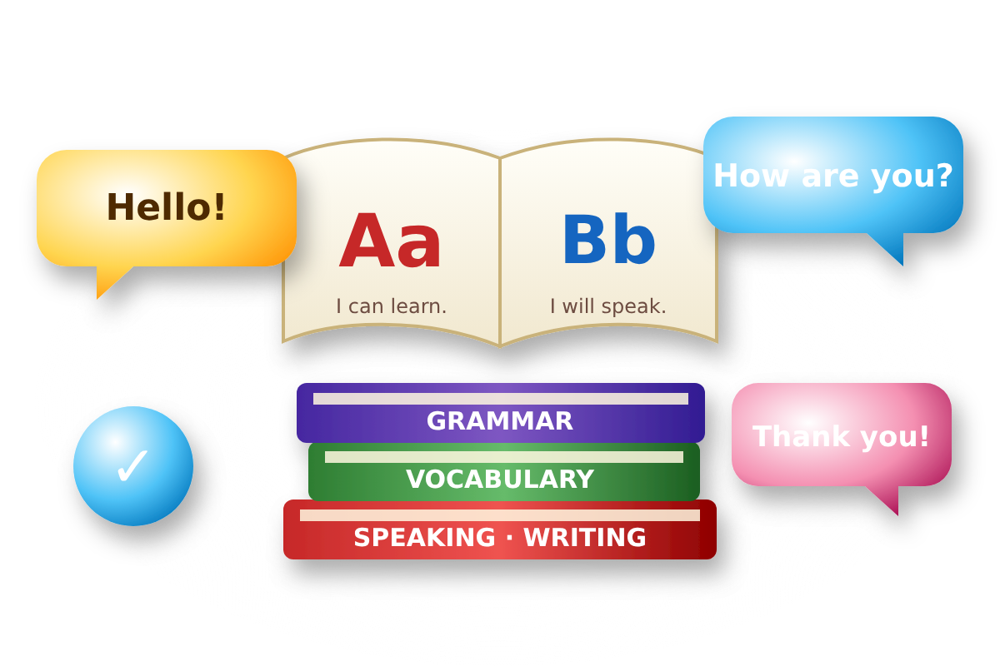
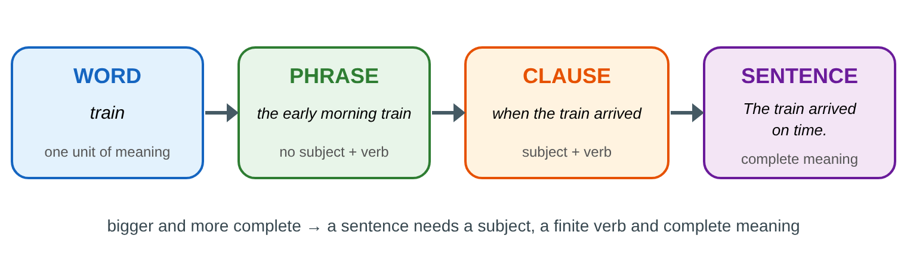
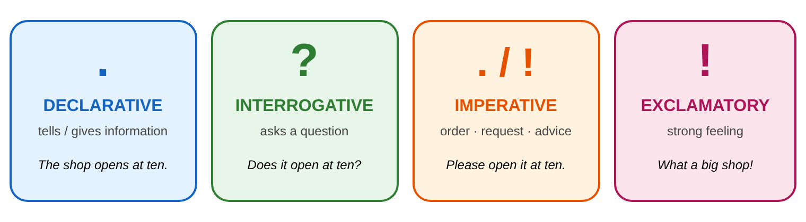

[हिंदी] हिंदी पट्टी – हर नियम के नीचे आसान हिंदी में समझ
Levels: [Foundation] [Intermediate] [Advanced] [Exam Focus]
This notebook teaches English step by step – from the alphabet to advanced exam English – so that you can learn without a teacher. Read the rule, study the examples, avoid the common mistakes, practise, and then check yourself with the answer key.
This is a bilingual (English + Hindi) edition: every rule, example, mistake and answer explanation comes with simple Hindi so that you understand fully. The English sentences themselves stay in English – those are what you are learning.
[हिंदी] यह किताब आपको बिना teacher के, A-B-C से लेकर competitive exam की English तक, क़दम-दर-क़दम सिखाती है। हर नियम, उदाहरण, आम गलती और उत्तर की व्याख्या के साथ आसान हिंदी दी गई है – नारंगी पट्टी (हिं) में। English वाक्य English में ही रहेंगे, क्योंकि वही सीखने हैं। नियम पढ़िए → उदाहरण समझिए → गलतियों से बचिए → practice कीजिए → answer key से ख़ुद जाँचिए।
| Step | What you do · आप क्या करेंगे | Box you will see |
|---|---|---|
| 1 | Read the learning goals and the level of the chapter · लक्ष्य और स्तर देखिए | ◎ Learning Goals |
| 2 | Try the warm-up – you already know more than you think! · शुरुआती अभ्यास | ☀ Warm-up |
| 3 | Learn the rule (formula, table or diagram) · नियम समझिए | R RULE |
| 4 | Study examples from home, school, market, travel, office and exams · उदाहरण पढ़िए | E EXAMPLES |
| 5 | Avoid common mistakes – wrong ✗, right ✓ and the reason · गलती और कारण | ✗ COMMON MISTAKES |
| 6 | Understand confusing pairs · उलझाने वाले जोड़े | ⇄ COMPARE & UNDERSTAND |
| 7 | Revise the key takeaways · मुख्य बातें दोहराइए | ✓ QUICK REVISION |
| 8 | Practise – easy → medium → difficult; write in the space given · दी गई जगह में लिखिए | ✎ PRACTICE |
| 9 | Check your answers and read the explanation for every mistake · उत्तर मिलाइए, व्याख्या पढ़िए | ✓ ANSWER KEY |
| 10 | Read the orange हिं strip under every rule for a simple Hindi explanation · हर नियम के नीचे हिंदी समझ | हिं strip |
हर chapter पहले नियम (rule) समझाता है, फिर उदाहरण देता है, फिर आम गलतियाँ बताता है। Practice के बाद answer key से खुद जाँचें। जो सवाल गलत हुआ, उसका explanation ज़रूर पढ़ें और उसे अपनी notebook में लिखें।
[हिंदी] Foundation = बिल्कुल शुरुआत · Intermediate = school/college और रोज़ की English · Advanced = college, नौकरी और आत्मविश्वासी learners · Exam Focus = competitive exam वाले सवाल।
[हिंदी] (1) पूरा practice set करने के बाद ही उत्तर देखें। (2) अलग रंग के पेन से ✓ या ✗ लगाएँ। (3) हर ✗ की व्याख्या पढ़ें और सही वाक्य एक बार लिखें। (4) 7 दिन बाद सिर्फ़ ✗ वाले सवाल फिर करें।
Take the Diagnostic Test (next section) first. Then choose the route that matches your goal.
[हिंदी] पहले अगले हिस्से का Diagnostic Test दीजिए, फिर अपने लक्ष्य के हिसाब से रास्ता चुनिए: 1. School Learner (कक्षा 3–10, बिल्कुल शुरुआत) · 2. Daily English Learner (घर, बाज़ार, यात्रा, phone) · 3. College & Job Learner (college, नौकरी, office) · 4. Competitive Exam Learner (SSC, बैंक, रेलवे, राज्य परीक्षाएँ)।
| Route | Who | Recommended chapter order |
|---|---|---|
| 1. School Learner | Classes 3–10, absolute beginners | 1 → 8 (Vol 1) → 9–20 (Vol 2) → 21–28 (tenses) → 45–47 (everyday words) → 59–61 (daily speaking) → 70, 73 (paragraph & letter writing) → revision quizzes |
| 2. Daily English Learner | Home, market, travel, phone, WhatsApp | 1–8 → 45–47 → 57–58 (pronunciation) → 59–64 (daily conversations) → 9, 12–13, 18 → 25–27 (tenses for speaking) → 62, 74 (messages & emails) |
| 3. College & Job Learner | College students, freshers, office staff | Diagnostic → weak areas of 1–20 → 21–32 → 36–38, 44 → 48–52, 55 → 65–67 (interview, office, presentations) → 72–76 (précis, emails, essays, reports) |
| 4. Competitive Exam Learner | SSC, banking, railway, state exams, CET etc. | Diagnostic → 13–14, 18, 24 → 25–32 → 33–44 → 48–56 → 78–86 (exam sets & mocks) → 87–91 (tests & common mistakes) |
This book uses standard Indian English, which mostly follows British spelling (colour, centre, practise as a verb). Wherever American English is different (color, center, practice), a short note says so. Both forms are correct – just be consistent in one piece of writing.
[हिंदी] यह किताब standard Indian English इस्तेमाल करती है, जो ज़्यादातर ब्रिटिश spelling (colour, centre) पर चलती है। जहाँ अमेरिकी रूप (color, center) अलग है, वहाँ छोटा note दिया है। दोनों सही हैं – बस एक लेख में एक ही रूप रखें।
| Vol | Part | Chapters | Level |
|---|---|---|---|
| 1 | A – Foundation English | ★ Diagnostic Test · 1 The English Alphabet: Letters, Vowels & Consonants · 2 Letter Sounds, Syllables & Spelling Basics · 3 Capital Letters & Punctuation · 4 Words, Word Order, Subject & Predicate · 5 Phrase, Clause & Sentence · 6 Kinds of Sentences · 7 Questions, Negatives & Short Answers · 8 Be, Have & Do – Basic Use · ★ Part A Revision Quiz | Foundation |
| 2 | B – Parts of Speech | 9 Nouns: Kinds, Countable & Uncountable · 10 Singular, Plural & Gender · 11 Possessives · 12 Pronouns & Pronoun Reference · 13 Articles: A, An, The & Zero Article · 14 Determiners & Quantifiers (some/any, much/many, few/a few, little/a little, each/every) · 15 Adjectives & Adjective Order · 16 Degrees of Comparison · 17 Adverbs & Their Position · 18 Prepositions (time, place, movement, between/among, dependent prepositions) · 19 Conjunctions · 20 Interjections · ★ Part B Revision Quiz | Foundation → Intermediate |
| 3 | C – Verbs, Tenses & Sentence Building | 21 Main & Helping Verbs, Verb Forms · 22 Regular & Irregular Verbs · 23 Action/Stative, Transitive/Intransitive Verbs · 24 Subject–Verb Agreement · 25 Present Tenses · 26 Past Tenses · 27 Future Tenses & Future Expressions · 28 Tense Comparisons (present perfect vs past simple, simple vs continuous) · 29 Modals & Semi-modals · 30 Imperatives, Question Tags & Indirect Questions · 31 Gerunds & Infinitives · 32 Participles & Common Verb Patterns · ★ Part C Revision Quiz | Intermediate |
| 4 | D – Advanced Grammar & Usage | 33 Noun Clauses · 34 Relative Clauses (defining & non-defining) · 35 Adverb Clauses · 36 Simple, Compound & Complex Sentences, Transformation · 37 Active & Passive Voice · 38 Direct & Reported Speech · 39 Conditionals (0–3, mixed), Wish & If only · 40 Causatives & Modal Perfects · 41 Reduced Clauses, Inversion, Emphasis & Cleft Sentences · 42 Ellipsis, Substitution & Parallelism · 43 Modifiers, Fragments, Run-ons & Comma Splices · 44 Cohesion & Register (formal vs informal) · ★ Part D Revision Quiz | Advanced |
| 5 | E – Vocabulary Builder | 45 High-Frequency Words & Everyday Phrases · 46 Topic Vocabulary I: Home, School, Shopping, Money · 47 Topic Vocabulary II: Travel, Work, Technology, Health, Feelings · 48 Synonyms, Antonyms & Near-Synonyms · 49 Homophones & Confusing Words · 50 Word Families, Prefixes, Suffixes & Roots · 51 Collocations · 52 Phrasal Verbs · 53 Idioms & Proverbs · 54 One-Word Substitutions · 55 Context Clues & Academic Vocabulary · 56 Spelling Patterns & Rules · ★ Part E Revision Quiz | Foundation → Advanced |
| 6 | F – Spoken & Everyday English | 57 Pronunciation I: Sounds & Sound Contrasts · 58 Pronunciation II: Syllables, Stress, Rhythm & Intonation · 59 Greetings, Introductions & Small Talk · 60 Asking for Help, Directions & Polite Requests · 61 Shopping, Bank & Appointments · 62 Phone Calls, WhatsApp & Messages · 63 Travel English · 64 Apologies, Plans, Opinions, Agreeing & Disagreeing · 65 Job Interviews · 66 Office Conversations & Meetings · 67 Presentations & Group Discussions · ★ Part F Revision Quiz | Foundation → Advanced |
| 7 | G – Reading & Writing Skills | 68 Reading for the Main Idea, Skimming & Scanning · 69 Inference, Tone & Vocabulary in Context · 70 Sentence Improvement & Paragraph Writing · 71 Linking Words & Cohesive Writing · 72 Summary & Précis Writing · 73 Letters & Applications · 74 Professional Emails & Notices · 75 Essay Writing · 76 Report Writing · 77 Story Writing · ★ Part G Revision Quiz | Intermediate → Advanced |
| 8 | H – Competitive Exam English | 78 Error Spotting · 79 Sentence Correction & Improvement · 80 Fill in the Blanks & Cloze Tests · 81 Para Jumbles · 82 Reading Comprehension · 83 Synonyms, Antonyms, Idioms & One-Word Substitution Sets · 84 Spelling, Voice & Narration Sets · 85 Practice Sets (Easy, Moderate, Difficult) · 86 Timed Mixed Mock Tests | Exam Focus |
| 9 | I – Revision & Reference | 87 Cumulative Tests · 88 Final Assessment · 89 Grammar Quick-Reference Tables · 90 Irregular Verb Chart · 91 200 Common Mistakes · 92 Glossary (English–Hindi) · 93 A–Z Topic Index · 94 Progress Tracker & 30-Day / 90-Day Study Plans | All levels |
[हिंदी] पहले Diagnostic Test दें · रोज़ एक chapter: नियम → उदाहरण → गलतियाँ → practice → answer key · हर उदाहरण ज़ोर से बोलें और हर उत्तर लिखें।
This test shows what you already know and where to start. Do not use a dictionary or ask anyone. If you don't know an answer, leave it – a blank answer gives better information than a guess.
Time: about 25–30 minutes · Total: 40 marks (1 mark each)
[हिंदी] यह test बताता है कि आप क्या पहले से जानते हैं और कहाँ से शुरू करें। Dictionary या किसी की मदद न लें। जवाब न आए तो छोड़ दें – अंदाज़े से भरने के बजाय ख़ाली छोड़ना बेहतर जानकारी देता है। समय: 25–30 मिनट, कुल 40 अंक।
1-b e is a vowel (a, e, i, o, u). · e स्वर है → Ch 1
2-b A sentence starts with a capital; names (proper nouns) are capitalised. · वाक्य की शुरुआत और नाम में capital → Ch 3
3-c Where question → question mark. · Where वाला सवाल → ? → Ch 3
4-c English order: Subject + Verb + Object/Place + Time. · क्रम: कर्ता + क्रिया + जगह + समय → Ch 4
5-b You takes are. · You के साथ are → Ch 8
6-b She/He/It + has. · She/He/It के साथ has → Ch 8
7-b He/She/It questions in the simple present use Does. · He/She/It वाले सवाल में Does → Ch 7, 8
8-b I don't (do not) + base verb. · I don't + मूल क्रिया → Ch 7
9-a Short answers don't contract at the end: Yes, it is. (not Yes, it's.) · हाँ वाले छोटे उत्तर में छोटा रूप नहीं: Yes, it is → Ch 7
10-c It has a subject (The baby) and a verb (is sleeping) and complete meaning. · कर्ता + क्रिया + पूरा अर्थ = वाक्य → Ch 5
11-b elephant starts with a vowel sound → an. · elephant vowel की आवाज़ से शुरू → an → Ch 13
12-c any in negatives; milk is uncountable (not many/a few). · नकार में any; milk गिना नहीं जाता → Ch 14
13-c Possessive 's: my sister's book. · का/की = 's: my sister's book → Ch 11
14-c the + superlative for one out of many. · कई में से एक सबसे … → the + superlative → Ch 16
15-b on + day, at + clock time. · दिन के साथ on, घड़ी के समय के साथ at → Ch 18
16-b among for three or more (between for two – but see Ch 18 for exceptions). · तीन या ज़्यादा के बीच among (दो के बीच between) → Ch 18
17-b well is the adverb of good. · good का adverb well है → Ch 17
18-b Order: size → shape → material. · क्रम: आकार → रूप → पदार्थ → Ch 15
19-b General truth → simple present; water is singular → boils. · सार्वभौमिक सत्य → simple present; water एकवचन → boils → Ch 25
20-c Look! → action happening now → present continuous. · Look! → अभी हो रहा काम → present continuous → Ch 25
21-b Completed action with present result → present perfect. · पूरा हुआ काम जिसका असर अभी है → present perfect → Ch 28
22-c Finished past time (last year) → simple past, not present perfect. · last year जैसा बीता समय → simple past → Ch 28
23-c Earlier of two past actions → past perfect. · भूतकाल के दो कामों में पहले वाला → past perfect → Ch 26
24-b One of + plural noun takes a singular verb. · One of + बहुवचन संज्ञा → एकवचन क्रिया → Ch 24
25-a Rule/obligation → must. · नियम/ज़रूरी → must → Ch 29
26-c After a preposition (at) use -ing. · preposition (at) के बाद -ing → Ch 31
27-b Positive statement → negative tag: isn't she? · सकारात्मक वाक्य → नकारात्मक tag → Ch 30
28-a Fixed personal plan → present continuous for future. · तय योजना → भविष्य के लिए present continuous → Ch 27
29-b Past simple passive: was/were + V3. · past simple passive: was/were + V3 → Ch 37
30-c Reported speech: am → was (backshift). · reported speech में am → was → Ch 38
31-b Second conditional: If + past (were) … would. · second conditional: If + were … would → Ch 39
32-d whose shows possession (his car). · whose = जिसका → Ch 34
33-b Parallel -ing forms. · एक जैसी -ing बनावट (parallel) → Ch 42
34-c Negative opener Not only → inversion: did he come. · Not only शुरुआत में → उलटा क्रम: did he come → Ch 41
35-b rapid = quick. · rapid = तेज़ = quick → Ch 48
36-b ancient ↔ modern. · ancient (प्राचीन) ↔ modern (आधुनिक) → Ch 48
37-b Cold room → switch the AC off. turn on = start; turn up = increase. · ठंडा कमरा → AC बंद करो = switch off → Ch 52
38-a a piece of cake = very easy (informal). · a piece of cake = बहुत आसान → Ch 53
39-c Could you … please? is polite and professional. · Could you … please? = विनम्र → Ch 60, 66
40-a He doesn't know. He/She/It + doesn't. · He/She/It के साथ doesn't → Ch 24, 78
| Section | Your score | If you scored less than … | Start with |
|---|---|---|---|
| 1 Foundation (Q1–10) | ___ / 10 | 8 | Volume 1 – all chapters |
| 2 Parts of Speech (Q11–18) | ___ / 8 | 6 | Volume 2 (chapters shown in the key) |
| 3 Verbs & Tenses (Q19–28) | ___ / 10 | 7 | Volume 3 |
| 4 Advanced Grammar (Q29–34) | ___ / 6 | 4 | Volume 4 |
| 5 Vocabulary, Communication & Exam (Q35–40) | ___ / 6 | 4 | Volumes 5, 6 & 8 |
| Total | ___ / 40 |
[हिंदी] 0–15: Chapter 1 से शुरू करें, Route 1 या 2 अपनाएँ, एक chapter 2–3 दिन में। 16–28: Volume 1 की सिर्फ़ practice जल्दी करें, फिर Volume 2 और 3 ध्यान से। 29–35: आधार अच्छा है – गलत उत्तरों वाले chapters, फिर Volume 4, 5, 7। 36–40: बहुत बढ़िया! Volume 4 और Exam Focus chapters पर जाएँ।
जिस section में कम marks आए, वहीं से पढ़ाई शुरू करें। Answer key में हर जवाब के आगे chapter number दिया है – गलत सवाल वाले chapter सबसे पहले पढ़ें। 4 हफ़्ते बाद यही test दोबारा दें और score की तुलना करें।
Read these everyday words aloud: bus, cab, pen, milk, tea, OK, TV, ATM, SMS, PIN.
[हिंदी] हम रोज़ English शब्द बोलते हैं – bus, tea, TV। ATM में हर letter का नाम बोलते हैं (ए-टी-एम), जबकि bus में letters की आवाज़ें मिलाकर एक शब्द बोलते हैं (बस)।
The English alphabet has 26 letters. Each letter has a capital (upper-case) form and a small (lower-case) form.
| Capital | A | B | C | D | E | F | G | H | I | J | K | L | M |
|---|---|---|---|---|---|---|---|---|---|---|---|---|---|
| Small | a | b | c | d | e | f | g | h | i | j | k | l | m |
| Capital | N | O | P | Q | R | S | T | U | V | W | X | Y | Z |
| Small | n | o | p | q | r | s | t | u | v | w | x | y | z |
[हिंदी] English वर्णमाला में 26 अक्षर (letters) हैं। हर अक्षर के दो रूप हैं – Capital / upper-case (बड़ा अक्षर: A, B, C) और Small / lower-case (छोटा अक्षर: a, b, c)। वाक्य की शुरुआत और नामों में capital letter लगता है (Chapter 3)।
| Letter | Name (say it like) | Letter | Name (say it like) |
|---|---|---|---|
| A | ay (as in day) | N | en |
| B | bee | O | oh |
| C | see | P | pee |
| D | dee | Q | kyoo (as in queue) |
| E | ee | R | ar (Indian/British) |
| F | ef | S | es |
| G | jee | T | tee |
| H | aych (not "hech") | U | yoo (as in you) |
| I | eye | V | vee |
| J | jay | W | double-yoo |
| K | kay | X | eks |
| L | el | Y | way (as in why) |
| M | em | Z | zed (Indian/British) / zee (American) |
[हिंदी] ध्यान दें: H का नाम "एच" (aych) है, W का "डबल-यू", Z का "ज़ेड" (भारत/ब्रिटेन) या "ज़ी" (अमेरिका)। Q = "क्यू", Y = "वाय"।
[हिंदी] भारत और ब्रिटेन में Z = "ज़ेड", अमेरिका में "ज़ी" – दोनों सही हैं। H को कई लोग "हेच" बोलते हैं, पर exam और interview में standard उच्चारण "एच" ही बोलें।
English में 26 letters हैं। हर letter के दो रूप होते हैं – capital (बड़ा: A) और small (छोटा: a)। Letter का नाम ("bee") और letter की आवाज़ (sound, जैसे bus में "b") अलग चीज़ें हैं।
[हिंदी] Vowel letters (स्वर) = 5: a, e, i, o, u। बाक़ी 21 letters consonants (व्यंजन) हैं। Vowel की आवाज़ मुँह खुला रखकर बिना रुकावट निकलती है (जैसे "आ", "ई"); consonant की आवाज़ में जीभ, दाँत या होंठ हवा को रोकते/दबाते हैं (जैसे "ब", "त", "स")। लगभग हर English शब्द में कम से कम एक vowel की आवाज़ होती है।
| Y as a consonant (at the start of a word/syllable) | Y as a vowel (inside or at the end) |
|---|---|
| yes, yellow, you, young, beyond | my, sky, gym, happy, baby, fly |
[हिंदी] Y दो काम करता है: शब्द या syllable की शुरुआत में consonant ("य" की आवाज़ – yes = येस), और शब्द के बीच या आख़िर में vowel ("आइ" या "इ" की आवाज़ – my = माइ, happy = हैपी)।
[हिंदी] rhythm (रिदम) में a, e, i, o, u कोई नहीं – यहाँ y vowel का काम करता है। queue (क्यू = लाइन) में 4 vowel letters हैं, पर आवाज़ सिर्फ़ एक "क्यू"।
A word may start with a vowel letter but a consonant sound, or with a consonant letter but a vowel sound.
| Word | First letter | First sound | Article |
|---|---|---|---|
| hour | h (consonant) | "aw" – vowel sound (h is silent) | an hour |
| honest | h | "o" – vowel sound | an honest man |
| university | u (vowel) | "yoo" – consonant sound | a university |
| one | o (vowel) | "w" – consonant sound | a one-day trip |
| European | E | "yoo" – consonant sound | a European city |
| MBA | M | "em" – vowel sound | an MBA student |
| SMS | S | "es" – vowel sound | an SMS |
| umbrella | u | "u" – vowel sound | an umbrella |
You will study a/an/the fully in Chapter 13. For now, remember: an comes before a vowel sound.
[हिंदी] a/an पूरी तरह Chapter 13 में पढ़ेंगे। अभी याद रखिए: vowel की आवाज़ (अ, आ, इ, ए, ओ…) से पहले an, बाक़ी सब से पहले a।
a या an चुनते समय word का पहला letter नहीं, पहली आवाज़ (sound) सुनें। hour में "h" बोला ही नहीं जाता, आवाज़ "आ" से शुरू होती है, इसलिए an hour। university "यू" (य की आवाज़) से शुरू होता है, इसलिए a university।
[हिंदी] पहले हर शब्द का पहला अक्षर देखें और A→Z लगाएँ। पहला अक्षर एक जैसा हो तो दूसरा, फिर तीसरा अक्षर देखें। अगर छोटा शब्द बड़े शब्द की शुरुआत ही है (car → card), तो छोटा शब्द पहले आता है।
[हिंदी] bag, ball, bank, bat – चारों "ba" से शुरू होते हैं, इसलिए तीसरा अक्षर देखा: g, l, n, t।
Caller: Hello, I'd like to book a cab to the airport.
Agent: Sure. May I have your name, please?
Caller: It's Meera Shah. M-E-E-R-A, Meera. S-H-A-H, Shah.
Agent: And your email ID?
Caller: meera dot shah nine-two at gmail dot com. That's M-E-E-R-A dot S-H-A-H nine-two.
Agent: Thank you, Ms Shah. Your cab is booked.
[हिंदी] हिंदी अर्थ: कॉलर – नमस्ते, मुझे airport के लिए cab बुक करनी है। एजेंट – ज़रूर, आपका नाम बताइए? कॉलर – मीरा शाह… (spelling बताती है)। एजेंट – और आपका email ID? … धन्यवाद, आपकी cab बुक हो गई।
[हिंदी] दो एक जैसे अक्षर हों तो "double" बोलें (Meera = M, double E, R, A)। मिलते-जुलते अक्षरों के लिए शहर का नाम जोड़ें – "B for Bombay", "P for Pune"। Email में "." = dot, "@" = at, "_" = underscore।
| ✗ Wrong | ✓ Right | Why · क्यों |
|---|---|---|
| a hour | an hour | h is silent; first sound is a vowel sound · h नहीं बोला जाता, पहली आवाज़ "आ" है |
| an university | a university | u sounds like "yoo" (consonant sound) · "यू" में "य" की आवाज़ है |
| There are 5 vowels sounds. | There are 5 vowel letters. | English has 5 vowel letters but many more vowel sounds · letters 5 हैं, आवाज़ें कहीं ज़्यादा |
| "Haych" is the only correct name of H. | "Aych" is standard; "haych" is a common variant. | Know the standard form for exams and interviews · exam में "एच" बोलें |
| b and d mixed: bab for dad | dad | b has its round part on the right, d on the left · b का गोला दाएँ, d का बाएँ |
| My name is "S-I-M-R-A-N" said too fast | S-I-M… R-A-N (pause in groups) | Spell in small groups so the listener can write · छोटे-छोटे हिस्सों में बोलें |
| Letter | Sound | |
|---|---|---|
| What is it? | A written symbol (A, b, k) | What you hear when you speak |
| Example | knife has 5 letters | knife has 3 sounds: n-ai-f (k and e are silent) |
| Why it matters | Spelling | Pronunciation and choosing a/an |
[हिंदी] Letter = लिखा हुआ चिह्न; sound = बोलने पर सुनाई देने वाली आवाज़। knife (नाइफ़ = चाकू) में 5 letters हैं पर सिर्फ़ 3 आवाज़ें (k और e silent)। Spelling के लिए letters, और उच्चारण व a/an के लिए sound देखें।
[हिंदी] 26 अक्षर · 5 स्वर (a, e, i, o, u) · 21 व्यंजन। Y शुरुआत में व्यंजन, बीच/आख़िर में स्वर। a/an पहली आवाज़ से तय होता है। वर्णक्रम में पहला, फिर दूसरा अक्षर देखें।
Practice A
1-c 26 letters – English वर्णमाला में 26 अक्षर हैं।
2-d r consonant (व्यंजन) है; vowels सिर्फ़ a, e, i, o, u हैं।
3-c 26 − 5 = 21 consonants।
4-c sky (स्काइ) में y "आइ" की आवाज़ देता है → vowel। बाक़ी शब्दों में y शुरुआत में है → consonant।
5-d yesterday में y शुरुआत में "य" की आवाज़ देता है → consonant। (gym, my, happy में vowel।)
6-b hour (आवर) में h silent है, आवाज़ "आ" से शुरू → vowel sound। university "य", one "व", yacht "य" से शुरू होते हैं।
7-c European "यू" (य की आवाज़) से शुरू → consonant sound। बाक़ी तीनों vowel sound से शुरू होते हैं।
8-c SMS = "एस-एम-एस", पहली आवाज़ "ए" → an SMS। (सही रूप: an hour, a university, an MBA student।)
9-b a → b → m का क्रम।
10-d bag – तीसरा अक्षर g है, जो l, n, t से पहले आता है।
11-a H का standard नाम aych ("एच") है।
12-b अमेरिका में zee; भारत/ब्रिटेन में zed।
13-c e-u-a-i-o → 5 vowel letters।
14-a myth में a, e, i, o, u नहीं – y ही vowel का काम करता है।
Practice B 15. q 16. g 17. r 18. e 19. b 20. d
Practice C 21. c, e 22. l, n 23. r, u 24. x, z
Practice D 25. 2 (a, e) 26. 3 (o, u, e) 27. 3 (a, a, a) 28. 0 vowel letters – पर यहाँ y vowel का काम करता है 29. 5 (e, a, u, i, u)
Practice E 30. an 31. an (h silent) 32. a ("यू" = य की आवाज़) 33. an 34. a ("व" की आवाज़) 35. an (h silent) 36. an ("एक्स") 37. a ("यू")
Practice F 38. coffee, juice, milk, tea 39. place, plan, plant, plate (plan, plant की शुरुआत है, इसलिए पहले आता है) 40. sum, sun, Sunday, sunny (sum पहले क्योंकि m, n से पहले आता है; Sunda… पहले क्योंकि d, n से पहले आता है)
Practice G – sample answers · नमूना उत्तर
Say these pairs aloud. Listen to the difference: hat – hate · pin – pine · hop – hope · cut – cute.
What changed in the spelling? → Only an e was added at the end, but the vowel sound became long!
[हिंदी] hat (हैट) → hate (हेट): सिर्फ़ आख़िर में e जोड़ा, और बीच की vowel की आवाज़ लंबी हो गई। इसे "magic e" कहते हैं।
Most consonants have one main sound. A few letters have two sounds, and some sounds are spelt with two letters.
| Letter | Hard sound | Soft sound (before e, i, y) |
|---|---|---|
| C | "k" – cat, cup, come | "s" – city, centre, rice, bicycle |
| G | "g" – go, game, bag | "j" – gym, page, orange, giant |
| S | "s" – sun, bus | "z" – is, has, rose, music |
| X | "ks" – box, six | "gz" – exam, exact |
[हिंदी] C और G के बाद e, i, y आए तो आवाज़ "नरम" (soft) हो जाती है: c = "स" (city = सिटी), g = "ज" (gym = जिम)। बाक़ी जगह c = "क", g = "ग"। S कभी "स" (sun) और कभी "ज़" (is, rose) बोला जाता है।
The soft g rule has common exceptions: get, give, girl, begin – here g is hard although e or i follows. Learn these by heart.
[हिंदी] अपवाद (exceptions): get, give, girl, begin में e/i के बाद भी g = "ग" ही है – इन्हें याद कर लें।
| Letters | Sound | Examples |
|---|---|---|
| sh | "sh" (श) | shop, fish, wash |
| ch | "ch" (च) | chair, lunch, teacher |
| tch | "ch" after a short vowel | match, watch, kitchen |
| th | soft "th" (थ जैसा, जीभ दाँतों के बीच) | think, three, bath |
| th | voiced "th" (द जैसा) | this, that, mother |
| ph | "f" | phone, photo, elephant |
| ck | "k" after a short vowel | back, clock, ticket |
| wh | "w" | what, when, white |
| ng | nasal "ng" | sing, long, spring |
| qu | "kw" | queen, quick, question |
[हिंदी] ck = "क" (back = बैक), wh = "व" (what = व्हॉट), ng = नाक से "ङ" (sing), qu = "क्व" (queen = क्वीन), tch = "च" (match = मैच)।
th की दो आवाज़ें हैं: think में जीभ हल्की-सी दाँतों के बीच रखकर हवा निकालें (न "ट", न "थ" ज़ोर से), और this में वही जगह, पर आवाज़ के साथ ("द" जैसा)। ph हमेशा "फ़" बोला जाता है: phone = "फ़ोन"।
| Vowel | Short (as in) | Long (says its name, as in) |
|---|---|---|
| a | cat, map | cake, name |
| e | bed, ten | these, complete |
| i | sit, big | bike, time |
| o | hot, dog | home, nose |
| u | cup, sun | cube, tune |
[हिंदी] व्यंजन-स्वर-व्यंजन वाले छोटे शब्द में vowel की आवाज़ छोटी होती है (cap = कैप)। आख़िर में e जोड़ने पर vowel अपना नाम बोलता है यानी आवाज़ लंबी हो जाती है (cape = केप), और आख़िरी e ख़ुद नहीं बोला जाता।
| Team | Sound | Examples |
|---|---|---|
| ai / ay | long a | rain, train, day, play |
| ee / ea | long e | see, tree, tea, read |
| oa / ow | long o | boat, road, snow, slow |
| igh / ie | long i | night, light, pie, tie |
| oo | "oo" (long) / "u" (short) | food, moon / book, look |
| ou / ow | "ow" | house, out, cow, now |
[हिंदी] दो vowels साथ आएँ तो अक्सर एक लंबी आवाज़ बनती है: rain (रेन), see (सी), boat (बोट), night (नाइट), food (फ़ूड), house (हाउस)।
ow can sound like snow (long o) or cow ("ow"). ea can sound like tea or bread ("e"). English spelling is not 100 % regular – read the word and listen to it (dictionary or text-to-speech).
[हिंदी] English की spelling हमेशा नियम से नहीं चलती: snow (स्नो) और cow (काउ) दोनों में ow है, पर आवाज़ अलग। नया शब्द dictionary या phone के text-to-speech पर सुनकर सीखें।
| Silent letter | Pattern | Examples |
|---|---|---|
| k | kn- at the start | know, knife, knee, knock |
| w | wr- at the start | write, wrong, wrist; also answer, sword |
| b | -mb at the end; before t | lamb, climb, comb, thumb, doubt, debt |
| h | some words | hour, honest, honour, what (in most accents) |
| gh | -igh, -ough | night, light, daughter, though |
| l | -alk, -ould | walk, talk, could, should, half |
| t | -sten, -stle | listen, fasten, castle, whistle |
| e | at the end (magic e) | make, hope, time |
[हिंदी] know = "नो" (k नहीं बोलते), write = "राइट" (w नहीं), climb = "क्लाइम" (b नहीं), hour = "आवर" (h नहीं), night = "नाइट" (gh नहीं), walk = "वॉक" (l नहीं), listen = "लिसन" (t नहीं)।
| ✗ Wrong | ✓ Right | Why · क्यों |
|---|---|---|
| "k-nife" | "naif" | k is silent before n at the start · शुरू में n से पहले k चुप |
| "wa-l-k" | "wawk" | l is silent in -alk · -alk में l नहीं बोलते |
| "ve-ge-ta-ble" (4 full beats) | "VEJ-tuh-bl" (3 beats) | the second e is usually not pronounced · "वेज-ट-बल", 3 हिस्से |
| "fone" spelt fone | phone | "f" sound is spelt ph in many words · "फ़" की आवाज़ ph से भी |
| "hour" said "ha-war" | "aw-er" | h is silent · "आवर" बोलें |
A syllable is a beat of a word with one vowel sound. Clap as you say the word.
| Word | Syllables | Count |
|---|---|---|
| pen | pen | 1 |
| water | wa · ter | 2 |
| computer | com · pu · ter | 3 |
| information | in · for · ma · tion | 4 |
| responsibility | re · spon · si · bi · li · ty | 6 |
Tip: Count the vowel sounds, not the vowel letters: cake has 2 vowel letters but 1 vowel sound → 1 syllable.
Syllable = word का एक "ताल" (beat)। लंबे word को हिस्सों में बोलें और लिखें: in-for-ma-tion। हर हिस्से में एक vowel की आवाज़ होती है। cake में दो vowel letters (a, e) हैं, पर आवाज़ एक है, इसलिए 1 syllable।
[हिंदी] ज़्यादातर शब्दों में -s। अगर शब्द s, ss, sh, ch, x, z, o पर ख़त्म हो तो -es (boxes, watches)। व्यंजन + y हो तो y हटाकर -ies (baby → babies); स्वर + y हो तो सिर्फ़ -s (boy → boys)।
make → making, write → writing, dance → danced, use → user
But keep e before a consonant suffix: hope → hopeful, care → careless, move → movement.
[हिंदी] आख़िरी silent e को -ing/-ed/-er (vowel से शुरू होने वाले ending) से पहले हटा दें: make → making। पर -ful, -less, -ment (व्यंजन से शुरू) से पहले e रहने दें: hopeful।
One syllable, one short vowel + one consonant → double the consonant before -ing / -ed / -er / -est:
run → running, stop → stopped, big → bigger, hot → hottest, sit → sitting
Don't double after two vowels or two consonants: eat → eating, rain → rained, help → helping.
[हिंदी] एक syllable वाला शब्द + एक छोटा vowel + एक व्यंजन → ending से पहले आख़िरी व्यंजन दो बार लिखें: run → running, stop → stopped। दो vowels (eat) या दो व्यंजन (help) हों तो नहीं दोहराते।
Consonant + y → change y to i before most endings: happy → happiness, carry → carried, easy → easier.
Keep y before -ing: carry → carrying, study → studying (otherwise you would get "ii").
[हिंदी] व्यंजन + y वाले शब्द में ending जोड़ते समय y → i (happy → happiness, carry → carried)। पर -ing से पहले y रहने दें (carrying, studying), वरना "ii" बन जाएगा।
travel → travelled, travelling (Indian/British) · traveled, traveling (American). cancel → cancelled / canceled. Both systems are correct; use one consistently.
[हिंदी] भारत/ब्रिटेन में travelled, cancelled (दो l), अमेरिका में traveled, canceled (एक l)। दोनों सही हैं – पर एक ही लेख में एक ही तरीक़ा रखें।
| ✗ Wrong | ✓ Right | Rule · नियम |
|---|---|---|
| writting | writing | write → drop e, no doubling (long vowel) · e हटाओ, t एक ही |
| runing | running | short vowel + one consonant → double · n दो बार |
| studing | studying | keep y before -ing · -ing से पहले y रहता है |
| babys | babies | consonant + y → ies · व्यंजन + y → ies |
| boies | boys | vowel + y → just s · स्वर + y → सिर्फ़ s |
| watchs | watches | ch → -es · ch के बाद -es |
| hopeing | hoping | drop e before -ing · -ing से पहले e हटाओ |
| carefull | careful | the suffix is -ful (one l) · -ful में एक ही l |
| Long vowel (from magic e) | Short vowel (doubled consonant) | Example |
|---|---|---|
| hoping = hope + ing (आशा करना) | hopping = hop + ing (कूदना) | I am hoping for a job. / The rabbit is hopping. |
| taping = tape + ing (टेप लगाना) | tapping = tap + ing (थपथपाना) | She is taping the box. / He is tapping the table. |
| planed (made smooth with a plane) | planned = plan + ed (योजना बनाई) | We planned a trip. |
[हिंदी] एक अक्षर दोहराने से अर्थ बदल जाता है: hoping (आशा करना) बनाम hopping (कूदना); planed (रंदा चलाया) बनाम planned (योजना बनाई)।
[हिंदी] c, g नरम (स, ज) e/i/y से पहले · ph = फ़ · magic e आवाज़ लंबी करता है · silent अक्षर: know, write, lamb, hour, night, walk, listen · syllable = एक vowel आवाज़ · spelling: -es, y→ies, e हटाना, व्यंजन दोहराना।
Practice A
1-c city में c के बाद i है → नरम "स"। (cat, cup, come में "क")
2-b page में g के बाद e → "ज"। girl अपवाद है ("ग")।
3-c knee (नी) – शुरू में n से पहले k नहीं बोलते।
4-b climb (क्लाइम) – आख़िर में m के बाद b silent।
5-c cute (क्यूट) – magic e ने u को लंबा किया। बाक़ी छोटी आवाज़ें हैं।
6-b ph = "फ़"।
7-c ba · na · na → 3 syllables।
8-b run – छोटा vowel + एक व्यंजन → n दोहराओ → running।
9-c write – e हटाओ, t मत दोहराओ (i लंबा है) → writing।
10-c व्यंजन + y → ies → cities।
11-a स्वर + y → सिर्फ़ s → keys। (kies आम गलती है।)
12-b watch ch पर ख़त्म → -es → watches।
13-b phone और fan दोनों "फ़" से शुरू होते हैं।
14-c mother में "द" जैसी (voiced) th। think, three, bath में बिना आवाज़ वाली th।
Practice B 15. S 16. L 17. L 18. S 19. L 20. S
Practice C 21. t 22. w 23. l 24. b 25. h 26. gh
Practice D 27. tea · cher (2) 28. ho · li · day (3) 29. im · por · tant (3) 30. um · brel · la (3)
Practice E 31. studying 32. studied 33. stopped 34. dancing 35. boxes 36. plays 37. happiness 38. useful (व्यंजन वाले ending से पहले e रहता है) 39. sitting 40. rained (दो vowels → दोहराना नहीं)
Practice F
He wrote a letter to the bank yesterday. (write irregular है: write – wrote – written; Ch 22)
Practice G – sample answers · नमूना उत्तर
Please send two boxes of matches and three bunches of bananas. (boxes, matches, bunches में -es; bananas में -s।)
"on monday i went to the mall in pune with priya"
Count the capital letters that are missing. (Answer: 6 → On Monday I went to the mall in Pune with Priya. – and a full stop is missing too!)
[हिंदी] वाक्य की शुरुआत (On), दिन (Monday), I (मैं), शहर (Pune) और व्यक्ति के नाम (Priya) – सबमें capital letter चाहिए, और अंत में full stop भी।
| # | Use | Examples |
|---|---|---|
| 1 | The first word of a sentence | The bus is late. Where are you? |
| 2 | The pronoun I (always) | Yesterday I said that I was busy. |
| 3 | Names of people and pets | Rahul Sharma, Dr Mehta, our dog Tommy |
| 4 | Places: cities, states, countries, rivers, mountains, roads | Ahmedabad, Kerala, India, the Ganga, Mount Abu, M.G. Road |
| 5 | Days, months, festivals | Monday, January, Diwali, Eid, Christmas |
| 6 | Languages and nationalities | English, Hindi, Gujarati, Indian, Japanese food |
| 7 | Titles before names | Mr Singh, Mrs Kapoor, Ms Rao, Professor Joshi, Prime Minister Modi |
| 8 | Organisations, companies, brands | State Bank of India, Indian Railways, Tata Motors |
| 9 | Main words in titles of books, films, headings | The Jungle Book, A Report on Water Saving |
| 10 | Short forms (abbreviations/acronyms) | ATM, PIN, SMS, UPI, PM, ID |
[हिंदी] Capital letter लगाइए: (1) वाक्य का पहला शब्द, (2) I (मैं) हमेशा, (3) लोगों/पालतू जानवरों के नाम, (4) जगहें – शहर, राज्य, देश, नदी, सड़क, (5) दिन, महीने, त्योहार, (6) भाषाएँ और राष्ट्रीयता, (7) नाम से पहले पद (Mr, Dr), (8) संस्थाएँ/कंपनियाँ, (9) किताब/फ़िल्म के शीर्षक के मुख्य शब्द, (10) संक्षिप्त रूप (ATM, UPI)।
मौसम (summer), साधारण संज्ञा (mother, doctor), दिशा (go north) और विषय (maths, science – पर English भाषा होने से capital) में capital नहीं लगता।
Capital letter हर sentence की शुरुआत में, I (मैं) में, और हर नाम (व्यक्ति, जगह, दिन, महीना, त्योहार, भाषा, कंपनी) में लगता है। मौसम (summer, winter) और साधारण शब्द (mother, teacher, city) के लिए sentence के बीच में small letter लिखें।
| Mark | Name | Use | Example |
|---|---|---|---|
| . | full stop (British/Indian) / period (American) | statements and polite commands | I live in Surat. Please sit down. |
| ? | question mark | direct questions | What is your name? Can you help me? |
| ! | exclamation mark | strong feeling, surprise, a shout | What a beautiful day! Stop! Wow! |
[हिंदी] . (full stop / पूर्ण विराम) – सामान्य वाक्य और विनम्र आदेश। ? (प्रश्नचिह्न) – सीधे सवाल। ! (विस्मयादिबोधक) – तेज़ भावना, हैरानी या चिल्लाना।
| ✗ Wrong | ✓ Right | Why · क्यों |
|---|---|---|
| Where is the station. | Where is the station? | A direct question needs ? · सीधे सवाल में ? |
| I asked him where the station was? | I asked him where the station was. | This is an indirect question inside a statement → full stop · अप्रत्यक्ष सवाल = full stop |
| It's so nice!!!!! | It's so nice! | Use only one exclamation mark in formal writing · औपचारिक लेखन में एक ही ! |
| Please send the report? | Please send the report. | A polite request in statement form ends with a full stop · कथन वाला अनुरोध = full stop |
[हिंदी] Comma लगाइए: (1) तीन या ज़्यादा चीज़ों की सूची में, (2) शुरुआती शब्द के बाद (Yes, However, In the morning), (3) किसी को पुकारते समय (Rahul, …), (4) उद्धरण से पहले, (5) and/but/so/or से जुड़े दो लंबे वाक्यों में, (6) तारीख़, संख्या और पते में।
| Sentence | Meaning |
|---|---|
| Let's eat, Grandma! | We are calling Grandma to come and eat. |
| Let's eat Grandma! | (Funny/wrong) We are going to eat Grandma! |
| My brother, who lives in Pune, is a doctor. | I have one brother; extra information about him. |
| My brother who lives in Pune is a doctor. | I have more than one brother; this one lives in Pune. |
[हिंदी] Let's eat, Grandma! = दादी, चलो खाना खाएँ! पर comma हटाओ तो Let's eat Grandma! = चलो दादी को खा जाएँ! 😄 इसी तरह commas के साथ My brother, who lives in Pune, = मेरा एक ही भाई है; बिना comma = कई भाइयों में से वह जो पुणे में रहता है।
[हिंदी] सूची में and से पहले वाला comma (Oxford comma) अमेरिकी लेखन में आम है, भारतीय/ब्रिटिश में अक्सर नहीं – दोनों सही। संख्या: भारतीय तरीक़ा लाख/करोड़ (12,50,000), अंतरराष्ट्रीय तरीक़ा हज़ार में (1,250,000)।
1. Short forms (contractions) – the apostrophe shows missing letters:
| Full | Short | Full | Short |
|---|---|---|---|
| I am | I'm | do not | don't |
| you are | you're | does not | doesn't |
| he is / he has | he's | cannot | can't |
| it is / it has | it's | will not | won't |
| we have | we've | I would / I had | I'd |
2. Possession (belonging) – Riya's bag = the bag of Riya:
[हिंदी] काम 1 – छोटा रूप: apostrophe वहाँ लगता है जहाँ अक्षर हटाए गए हैं (do not → don't)। काम 2 – "का/की/के": एक वचन में 's (teacher's desk = टीचर की मेज़), -s वाले बहुवचन में सिर्फ़ ' (students' books = छात्रों की किताबें), बिना -s वाले बहुवचन में 's (children's park)।
| ✗ Wrong | ✓ Right | Why · क्यों |
|---|---|---|
| The dog wagged it's tail. | The dog wagged its tail. | its = belonging to it (no apostrophe); it's = it is / it has · its = उसका; it's = it is |
| Your welcome. | You're welcome. | you're = you are; your = belonging to you · you're = तुम हो; your = तुम्हारा |
| Apple's 50 per kg | Apples ₹50 per kg | A simple plural never takes an apostrophe · साधारण बहुवचन में ' नहीं |
| Do'nt | Don't | The apostrophe goes where the letter (o) is missing: do not → don't · हटे अक्षर की जगह ' |
| the boys's room | the boys' room | plural ending in -s → apostrophe only · -s वाले बहुवचन में सिर्फ़ ' |
| Mark | Name | Main use | Example |
|---|---|---|---|
| " " or ' ' | quotation marks (inverted commas) | exact spoken words; titles of short works | Mother said, "Drink your milk." |
| : | colon | before a list or an explanation | Bring three things: a pen, a photo and your ID card. |
| ; | semicolon | joins two closely related full sentences | It was raining; the match was cancelled. |
| - | hyphen (short) | joins words into one idea | a well-known actor, twenty-five, mother-in-law, a 5-year-old boy |
| – | dash (longer) | a sudden break or added comment | He was tired – very tired. |
| ( ) | brackets (parentheses) | extra information | Call me tomorrow (after 5 p.m.). |
| … | ellipsis | words left out / speech trailing off | I was going to say… never mind. |
[हिंदी] " " = किसी के बोले हुए सटीक शब्द · : (colon) = सूची या व्याख्या से पहले · ; (semicolon) = दो जुड़े हुए पूरे वाक्यों के बीच · - (hyphen) = दो शब्दों को एक बनाना (well-known) · – (dash) = अचानक रुकना/टिप्पणी · ( ) = अतिरिक्त जानकारी · … = बात अधूरी छोड़ना।
| Point | Indian / British | American |
|---|---|---|
| Titles | Mr, Mrs, Dr (no full stop) – Mr. also accepted in India | Mr., Mrs., Dr. (with full stop) |
| Quotation marks | often single: 'Hello' (double also common in India) | double: "Hello" |
| Comma/full stop with quotes | outside if not part of the quote: He called it 'urgent'. | usually inside: He called it "urgent." |
| Time | 10.30 a.m. or 10:30 a.m. | 10:30 a.m. |
| All of these are acceptable – follow one style consistently in a document. |
[हिंदी] भारत/ब्रिटेन में Mr, Dr (बिना बिंदु) और अमेरिका में Mr., Dr. – दोनों सही। एक document में एक ही शैली रखें।
| Without hyphen | With hyphen |
|---|---|
| The boy is five years old. (after the noun) | a five-year-old boy (before the noun, joined as one adjective; year stays singular) |
| a man eating fish (a man who is eating fish) | a man-eating fish (a fish that eats people!) |
| re cover – not a word | re-cover the sofa (cover again) vs recover from illness |
[हिंदी] संज्ञा से पहले उम्र एक विशेषण बनती है: a five-year-old boy (year एकवचन)। संज्ञा के बाद: The boy is five years old. man-eating fish = आदमख़ोर मछली, पर man eating fish = मछली खाता हुआ आदमी!
Exams often test: its/it's, your/you're, capital letters for days, months, languages but not seasons, ? after direct questions only, and apostrophe with plural possessives (students'). Read the whole sentence before choosing.
[हिंदी] परीक्षा में अक्सर पूछा जाता है: its/it's, your/you're, दिन-महीने-भाषा में capital पर मौसम में नहीं, ? सिर्फ़ सीधे सवाल में, और students' जैसे बहुवचन possessive।
[हिंदी] Capital: शुरुआत, I, नाम, जगह, दिन, महीने, त्योहार, भाषा (मौसम नहीं) · . ? ! · comma: सूची, पुकार, तारीख़ · it's = it is, its = उसका · you're = you are, your = तुम्हारा।
Practice A
1-b वाक्य की शुरुआत और शहर के नाम में capital; मौसम (winter) में नहीं।
2-c हफ़्ते के दिन हमेशा capital से। summer, teacher, city साधारण शब्द हैं।
3-c सीधा सवाल → ?
4-a I wonder what time… एक कथन है जिसके अंदर अप्रत्यक्ष सवाल है → full stop।
5-b its = उसका। it's = it is।
6-c You're = you are (तुम हो)। Your = तुम्हारा।
7-b -s वाला बहुवचन → s के बाद सिर्फ़ apostrophe: students'।
8-c will not का छोटा रूप won't (अनियमित)।
9-a जिसे पुकार रहे हैं उसके नाम के बाद comma।
10-b Colon पूरे clause के बाद और सूची से पहले आता है। (a), (c), (d) में colon साधारण वाक्य को तोड़ देता है।
11-a संज्ञा से पहले पूरी उम्र hyphen से जुड़ती है और year एकवचन रहता है।
12-a अमेरिकी शैली में Mr.; भारतीय/ब्रिटिश में अक्सर Mr बिना बिंदु।
13-c मौसम (monsoon) में capital नहीं। भाषा, त्योहार, देश में capital।
14-b दो जुड़े हुए पूरे वाक्य → semicolon (या full stop, या , so)। (a) comma splice है (Ch 43)।
Practice B
What a lovely surprise!
Practice C
Please buy rice, dal, sugar and oil. (Oxford comma के साथ sugar, and oil भी सही।)
On 26 January 1950, India became a republic. (शुरुआती समय वाले phrase के बाद comma। अमेरिकी शैली: January 26, 1950,।)
Practice D 25. I'm 26. they're 27. doesn't 28. can't 29. we've 30. it's
Practice E 31. It's 32. its 33. your 34. You're 35. girls' (कई लड़कियों का hostel)
Practice F
Where are you going?
My mother-in-law is visiting us. (दो hyphen)
Practice G – sample answers · नमूना उत्तर
Hi Neha! I'm having my birthday party on Saturday, 14 June, at 7 p.m. It's at Green Leaf Restaurant, C.G. Road. Please come – it won't be fun without you! जाँचें: दिन, महीना, नाम और जगह में capital; तारीख़/पते में comma; एक बार में एक ही !।
A word is the smallest unit of language that has a meaning and can stand alone: book, run, happy, quickly, in, and, wow. Every word does a job in a sentence. These jobs are called parts of speech.
[हिंदी] शब्द (word) भाषा की सबसे छोटी इकाई है जिसका अपना अर्थ होता है। वाक्य में हर शब्द कोई काम करता है – इसी काम के आधार पर उसे part of speech (शब्द-भेद) कहते हैं।
| Part of speech | Job | Examples |
|---|---|---|
| Noun | names a person, place, thing or idea | Ravi, Delhi, phone, water, honesty |
| Pronoun | takes the place of a noun | I, you, he, she, it, we, they, this |
| Verb | shows an action or a state | run, eat, write, is, have, seem |
| Adjective | describes a noun | big, red, happy, three, Indian |
| Adverb | describes a verb, adjective or another adverb | slowly, very, always, here, today |
| Preposition | shows place, time, direction or relation | in, on, at, under, with, for |
| Conjunction | joins words or sentences | and, but, or, because, so |
| Interjection | shows sudden feeling | Oh! Wow! Ouch! Hurray! |
[हिंदी] Noun = संज्ञा (नाम) · Pronoun = सर्वनाम (नाम की जगह: मैं, वह) · Verb = क्रिया (काम या स्थिति) · Adjective = विशेषण (संज्ञा की विशेषता: बड़ा, लाल) · Adverb = क्रिया-विशेषण (कैसे/कब/कहाँ: धीरे, आज) · Preposition = संबंधसूचक (में, पर, के नीचे) · Conjunction = समुच्चयबोधक (और, लेकिन, क्योंकि) · Interjection = विस्मयादिबोधक (अरे! वाह!)
Wow! My little sister sings very sweetly in the evening and everyone listens.
(वाह! मेरी छोटी बहन शाम को बहुत मधुर गाती है और सब सुनते हैं।)
| Word | Part of speech | Word | Part of speech |
|---|---|---|---|
| Wow | interjection | in | preposition |
| My | possessive word (determiner) | the evening | noun (with the) |
| little | adjective | and | conjunction |
| sister | noun | everyone | pronoun |
| sings | verb | listens | verb |
| very · sweetly | adverb · adverb |
The same word can be a different part of speech in a different sentence:
[हिंदी] एक ही शब्द अलग वाक्य में अलग शब्द-भेद हो सकता है: I water the plants (पानी देता हूँ – verb) / Drink some water (पानी – noun)। She runs fast (तेज़ – adverb) / a fast train (तेज़ ट्रेन – adjective)।
| Subject (who/what does it?) | Verb (action/state) | Object (whom/what?) |
|---|---|---|
| I | drink | tea. |
| Riya | is reading | a book. |
| The shopkeeper | gave | me the change. |
| We | love | our country. |
English = S V O. Hindi = S O V ("मैं चाय पीता हूँ"). This one difference causes many mistakes for Indian learners.
हिंदी में क्रिया (verb) आख़िर में आती है: "राम किताब पढ़ता है।" English में verb subject के तुरंत बाद आता है: "Ram reads a book." पहले कौन (subject), फिर क्या करता है (verb), फिर किसको/क्या (object)।
Subject + Verb + Object + Place + Manner + Time – the normal order in a statement.
| S | V | O | Place (where?) | Manner (how?) | Time (when?) |
|---|---|---|---|---|---|
| I | play | cricket | in the park | – | every Sunday. |
| She | sang | a song | at the function | beautifully | yesterday. |
| We | reached | – | the station | by bus | at 6 o'clock. |
Memory tip: "P before T" – place before time: at home in the evening, in Pune last year.
A time phrase can also go at the start for emphasis: Every Sunday, I play cricket in the park.
[हिंदी] क्रम: कर्ता + क्रिया + कर्म + जगह (कहाँ) + तरीक़ा (कैसे) + समय (कब)। I play cricket in the park every Sunday = मैं हर रविवार पार्क में क्रिकेट खेलता हूँ। याद रखें: जगह पहले, समय बाद में। ज़ोर देने के लिए समय वाक्य की शुरुआत में भी आ सकता है।
In English an adjective normally comes before the noun it describes: a red car, fresh vegetables, an honest man.
After verbs like be, look, seem, feel, the adjective comes after the verb: The car is red. You look tired.
[हिंदी] हिंदी की तरह English में भी विशेषण संज्ञा से पहले आता है: a red car (लाल गाड़ी)। पर is, look, seem, feel के बाद विशेषण क्रिया के बाद आता है: The car is red (गाड़ी लाल है), You look tired (तुम थके लगते हो)।
[हिंदी] अर्थ: पापा रोज़ सुबह बैठक में अख़बार पढ़ते हैं। · टीचर ने आज class में पाठ साफ़-साफ़ समझाया। · मैंने कल बाज़ार से दो किलो टमाटर ख़रीदे। · कृपया मुझे शाम 5 बजे से पहले email से report भेज दीजिए। · ट्रेन 9.15 पर platform 3 से छूटती है।
| ✗ Wrong | ✓ Right | Why · क्यों |
|---|---|---|
| I tea drink. | I drink tea. | Verb before object (S V O) · क्रिया कर्म से पहले |
| She yesterday went to Mumbai. | She went to Mumbai yesterday. | Time usually goes at the end (or at the very start) · समय आख़िर में (या बिल्कुल शुरू में) |
| I go every day to school. | I go to school every day. | Place before time · जगह पहले, समय बाद में |
| I very much like mangoes. | I like mangoes very much. | very much goes after the object · very much कर्म के बाद |
| He speaks very well English. | He speaks English very well. | Don't put the manner between the verb and the object · क्रिया और कर्म के बीच "कैसे" न डालें |
| A car red is outside. | A red car is outside. | Adjective before the noun · विशेषण संज्ञा से पहले |
| Where you are going? | Where are you going? | In questions the helping verb comes before the subject (Ch 7) · सवाल में सहायक क्रिया कर्ता से पहले |
| Subject | Predicate |
|---|---|
| Birds | fly. |
| My younger brother | plays the guitar very well. |
| The bank on M.G. Road | opens at 10 a.m. |
| Reading books | improves your vocabulary. |
| She | looks happy today. |
[हिंदी] Subject (उद्देश्य/कर्ता) = वाक्य किसके बारे में है। Predicate (विधेय) = उसके बारे में क्या कहा गया है – इसमें क्रिया हमेशा होती है। Birds | fly = पक्षी | उड़ते हैं।
How to find the subject: put who? or what? before the verb.
[हिंदी] Subject ढूँढने के लिए क्रिया से पहले "कौन?" या "क्या?" पूछिए। कौन इंतज़ार कर रहा है? → गेट के पास वाला बूढ़ा आदमी = subject।
The old man near the gate is waiting. → Who is waiting? → The old man near the gate (subject).
[हिंदी] Complete subject = कर्ता के सारे शब्द (The tall boy in the red shirt)। Simple subject = उनमें मुख्य शब्द (boy)। क्रिया का रूप (is/are) मुख्य शब्द से तय होता है: The boys in the red bus are noisy.
[हिंदी] आदेश वाले वाक्य में कर्ता you छिपा रहता है: (You) Close the door = दरवाज़ा बंद करो। सवाल और there वाले वाक्य में कर्ता क्रिया के बाद आ सकता है: There is a cat on the wall (दीवार पर एक बिल्ली है) – यहाँ कर्ता a cat है, There नहीं।
| Subject | Object | |
|---|---|---|
| Position | before the verb | after the verb |
| Question | Who/What does the action? | Whom/What receives the action? |
| Example | The dog bit the boy. | The dog bit the boy. |
| Change the order → | The boy bit the dog. | The meaning changes completely! |
| English uses word order (not endings like Hindi ने/को) to show who did what. |
[हिंदी] हिंदी में "ने/को" से पता चलता है कि किसने किसको किया (कुत्ते ने लड़के को काटा)। English में यह काम शब्दों का क्रम करता है: The dog bit the boy (कुत्ते ने लड़के को काटा) बनाम The boy bit the dog (लड़के ने कुत्ते को काटा!)।
In "rearrange the words" questions: first find the verb, then put the subject before it and the object after it. Then add place → manner → time. Check that a question has its helping verb before the subject.
[हिंदी] "शब्दों को सही क्रम में लगाइए" वाले सवाल में: पहले क्रिया ढूँढिए → उससे पहले कर्ता, बाद में कर्म → फिर जगह → तरीक़ा → समय। सवाल हो तो सहायक क्रिया कर्ता से पहले।
[हिंदी] 8 शब्द-भेद – काम से पहचान · क्रम: कर्ता + क्रिया + कर्म (+ जगह + तरीक़ा + समय) · विशेषण संज्ञा से पहले · वाक्य = subject (किसके बारे में) + predicate (क्या कहा गया) · आदेश में छिपा कर्ता you।
Practice A
1-b laugh (हँसना) काम बताता है → verb। (children – noun, loudly – adverb)
2-b beautiful (सुंदर) संज्ञा dress की विशेषता बताता है → adjective।
3-c under (के नीचे) चाबियों की जगह बताता है → preposition।
4-b but (लेकिन) दो वाक्य जोड़ता है → conjunction।
5-c कर्ता + क्रिया + कर्म + समय।
6-b कर्ता + क्रिया + जगह + समय; समय आख़िर में।
7-b क्रिया + कर्म (speaks Hindi), फिर तरीक़ा (very well)।
8-c very much कर्म के बाद आता है।
9-a क्रिया is से पहले के सारे शब्द = पूर्ण कर्ता (complete subject)।
10-b कर्ता का मुख्य शब्द manager है (is उसी से मेल खाता है)।
11-b Predicate में क्रिया live और कर्ता के बारे में कही गई बात है।
12-c आदेश में छिपा कर्ता you होता है।
13-b There कर्ता नहीं है; असली कर्ता a bank क्रिया is के बाद आता है।
14-c fast बताता है वह कैसे दौड़ती है → adverb। (a fast train में adjective होता।)
Practice B 15. interjection (विस्मयादिबोधक) 16. adverb (क्रिया-विशेषण) 17. pronoun (सर्वनाम) 18. noun (संज्ञा) 19. conjunction (समुच्चयबोधक) 20. adjective (विशेषण)
Practice C
The weather is very pleasant today.
Practice D
The sun | rises in the east.
The price of onions | has gone up. (मुख्य शब्द price एकवचन → has, have नहीं)
Practice E
I go for a walk every morning. (Every morning, I go for a walk. भी सही।)
He goes to the temple on Sundays.
Practice F
I read the newspaper every day.
He/She sent me an email yesterday. (an email – "e" vowel की आवाज़ है।)
Practice G – sample answers · नमूना उत्तर
I drink a glass of milk at home every morning. I catch the bus at the corner at 8 o'clock. I do my homework in my room in the evening. कोई भी तीन वाक्य सही हैं अगर क्रिया कर्ता के तुरंत बाद हो और जगह समय से पहले।
Read these aloud: (a) in the morning (b) because I was late (c) I was late.
Only (c) makes complete sense on its own. (a) has no subject or verb. (b) has a subject and verb but leaves you waiting – "because I was late… what happened?"
[हिंदी] (a) in the morning = सुबह में – न कर्ता, न क्रिया। (b) because I was late = क्योंकि मुझे देर हो गई – कर्ता और क्रिया हैं, पर बात अधूरी है ("…तो क्या हुआ?")। (c) I was late = मुझे देर हो गई – पूरा वाक्य।
| Unit | Has subject + verb? | Complete meaning? | Example |
|---|---|---|---|
| Word | – | – | train |
| Phrase | No (not both) | No | the early morning train |
| Clause | Yes | Maybe | when the train arrived (dependent) / the train arrived (independent) |
| Sentence | Yes – at least one independent clause | Yes | The train arrived on time. |

Phrase = शब्दों का समूह जिसमें subject और verb दोनों नहीं होते (जैसे "सुबह की ट्रेन")।
Clause = शब्दों का समूह जिसमें subject और verb दोनों होते हैं।
Sentence = कम से कम एक ऐसा clause जो अकेले पूरा अर्थ दे।
A phrase is a group of words that works as one part of speech. It has no subject + verb pair.
[हिंदी] Phrase शब्दों का ऐसा समूह है जो वाक्य में एक शब्द-भेद की तरह काम करता है, और उसमें कर्ता + क्रिया की जोड़ी नहीं होती।
| Phrase | Head word | Works like | Example (phrase in bold) |
|---|---|---|---|
| Noun phrase | a noun | a noun | My elder sister is a nurse. |
| Verb phrase | main verb + helpers | a verb | She has been working since morning. |
| Adjective phrase | an adjective | an adjective | The tea was too hot to drink. |
| Adverb phrase | an adverb | an adverb | He speaks very softly. |
| Prepositional phrase | a preposition | adjective or adverb | The man in the blue cap is my uncle. · We met at the bus stop. |
[हिंदी] Noun phrase = संज्ञा की तरह (मेरी बड़ी बहन) · Verb phrase = मुख्य क्रिया + सहायक क्रियाएँ (has been working = सुबह से काम कर रही है) · Adjective phrase = विशेषण की तरह (too hot to drink = पीने के लिए बहुत गरम) · Adverb phrase = क्रिया-विशेषण की तरह (very softly = बहुत धीरे) · Prepositional phrase = preposition से शुरू (in the blue cap = नीली टोपी वाला; at the bus stop = बस स्टॉप पर)।
[हिंदी] अर्थ: एक बड़ा भूरा कुत्ता पेड़ के नीचे सो रहा था। · स्टेशन के पास वाली दुकान काफ़ी महँगी है। · कृपया मुझे दोपहर के खाने के बाद फ़ोन करना।
Main + dependent = complete: I missed the bus because I woke up late.
[हिंदी] Independent (main) clause = कर्ता + क्रिया + पूरा अर्थ; अकेले वाक्य बन सकता है (I missed the bus = मेरी बस छूट गई)। Dependent clause = कर्ता + क्रिया तो है, पर अकेले अधूरा; अक्सर because, when, if, although, who, that जैसे जोड़ने वाले शब्द से शुरू होता है (because I woke up late = क्योंकि मैं देर से उठा)। दोनों मिलकर पूरा वाक्य बनाते हैं।
| Main clause | Dependent clause |
|---|---|
| We will go out | if it stops raining. |
| She smiled | when she saw her result. |
| This is the boy | who found my wallet. |
| I know | that you are busy. |
| Although the shop was crowded, | we got everything quickly. |
| A dependent clause can come first or second. When it comes first, put a comma after it. |
[हिंदी] आश्रित उपवाक्य पहले भी आ सकता है और बाद में भी। पहले आए तो उसके बाद comma लगाइए: Although the shop was crowded, we got everything quickly (दुकान में भीड़ थी, फिर भी हमें सब जल्दी मिल गया)।
| Phrase (no subject + verb) | Clause (subject + verb) |
|---|---|
| after dinner | after we had dinner |
| because of the rain | because it was raining |
| during the meeting | while the boss was speaking |
| before sunrise | before the sun rose |
| Tip: because of, during, despite + phrase; because, while, although + clause. |
[हिंदी] because of / during / despite के बाद phrase (बिना क्रिया): because of the rain (बारिश की वजह से)। because / while / although के बाद clause (कर्ता + क्रिया): because it was raining (क्योंकि बारिश हो रही थी)।
[हिंदी] पूरे वाक्य में चाहिए: (1) कर्ता, (2) काल वाली क्रिया (finite verb – is, goes, went, will come), (3) पूरा अर्थ। इनमें से कुछ भी न हो तो वह fragment (टूटा/अधूरा वाक्य) है।
| ✗ Fragment | What is missing · क्या कम है | ✓ Complete sentence |
|---|---|---|
| Because the shop was closed. | main clause · मुख्य उपवाक्य | We came back because the shop was closed. |
| Going to the market. | subject + finite verb · कर्ता + काल वाली क्रिया | I am going to the market. |
| The girl in the red dress. | verb + predicate · क्रिया + विधेय | The girl in the red dress is my cousin. |
| When you reach home. | main clause · मुख्य उपवाक्य | Call me when you reach home. |
| For example, apples and bananas. | subject + verb · कर्ता + क्रिया | I like fruit, for example, apples and bananas. |
| In chats and spoken English short fragments are normal ("Going out. Back soon."), but in exams, emails and essays write complete sentences. |
[हिंदी] बातचीत और chat में छोटे अधूरे वाक्य चलते हैं ("Going out. Back soon."), पर परीक्षा, email और निबंध में हमेशा पूरे वाक्य लिखें।
| Type | Structure | Example |
|---|---|---|
| Simple | one independent clause | The baby is sleeping. |
| Compound | two independent clauses joined by and, but, or, so (with a comma) | The baby is sleeping, so please talk softly. |
| Complex | one independent + one or more dependent clauses | Please talk softly because the baby is sleeping. |
| You will practise changing one type into another in Chapter 36. |
[हिंदी] Simple (सरल) = एक मुख्य उपवाक्य (बच्चा सो रहा है)। Compound (संयुक्त) = दो मुख्य उपवाक्य and, but, or, so से जुड़े (बच्चा सो रहा है, इसलिए धीरे बोलिए)। Complex (मिश्र) = एक मुख्य + एक या ज़्यादा आश्रित उपवाक्य (धीरे बोलिए क्योंकि बच्चा सो रहा है)।
A quick way to count clauses: count the finite verbs. She cooked and her brother washed the dishes. → 2 finite verbs → 2 clauses → compound sentence.
Careful: She cooked dinner and washed the dishes. has one subject with two verbs → it is still a simple sentence (one clause with a compound predicate).
[हिंदी] Clause गिनने का आसान तरीक़ा: काल वाली क्रियाएँ गिनिए। दो अलग कर्ता + दो क्रिया = दो clause। पर एक ही कर्ता की दो क्रियाएँ (She cooked dinner and washed the dishes) = एक ही clause = simple sentence।
In "identify the clause/phrase" questions, look for a subject + finite verb pair. If you find one → clause; if not → phrase. Words like because, when, if, who, that at the start → dependent clause.
[हिंदी] कर्ता + काल वाली क्रिया की जोड़ी मिले → clause; न मिले → phrase। शुरुआत में because, when, if, who, that → आश्रित उपवाक्य।
[हिंदी] Phrase = बिना कर्ता-क्रिया जोड़ी · Clause = कर्ता + क्रिया (स्वतंत्र या आश्रित) · Sentence = कर्ता + काल वाली क्रिया + पूरा अर्थ · Simple / Compound / Complex।
Practice A
1-b कर्ता + क्रिया नहीं → phrase (prepositional)।
2-c कर्ता the bell + क्रिया rang हैं, पर when से शुरू → अकेला नहीं चल सकता।
3-c the shop opens at nine में कर्ता + क्रिया + पूरा अर्थ है।
4-c यह बताता है कौन-सा लड़का → adjective की तरह काम।
5-b मुख्य क्रिया waiting + सहायक has been।
6-c मुख्य शब्द cup (संज्ञा)। (a) adverb phrase, (b) prepositional, (d) verb phrase।
7-c कर्ता The children + काल वाली क्रिया ran + पूरा अर्थ।
8-b because of + noun phrase (the heavy rain)।
9-a because + clause (it was raining heavily)।
10-b दो स्वतंत्र उपवाक्य but से जुड़े → compound।
11-c मुख्य उपवाक्य I will call you + आश्रित when I reach Delhi → complex।
12-a एक कर्ता, दो क्रियाएँ → एक ही clause → simple।
13-a पहले आने वाले आश्रित उपवाक्य के बाद comma।
14-d and दो बराबर (स्वतंत्र) उपवाक्यों को जोड़ता है; यह आश्रित उपवाक्य शुरू नहीं करता।
Practice B 15. P 16. IC 17. DC 18. P 19. DC 20. IC 21. P (क्रिया नहीं) 22. DC (the exam started = कर्ता + क्रिया)
Practice C (आश्रित उपवाक्य; कोष्ठक में जोड़ने वाला शब्द)
until I come back (until)
Practice D – नमूना उत्तर (कोई भी सही मुख्य उपवाक्य चलेगा)
We used the stairs because the lift was not working.
Your shoes are in the box under my bed.
Practice E
It was hot, so we switched on the AC.
Although I was tired, I finished my homework.
Practice F – sample answers · नमूना उत्तर
I request you to grant me leave for two days because I am suffering from fever. (अकेला because वाला हिस्सा fragment था; उसे मुख्य उपवाक्य चाहिए।)
(a) The shop opens at ten. (b) Does the shop open at ten? (c) Open the shop at ten. (d) What a big shop this is!
(a) gives information, (b) asks, (c) tells someone to do something, (d) shows strong feeling. The purpose decides the kind of sentence.
[हिंदी] (a) सूचना दे रहा है – दुकान दस बजे खुलती है। (b) पूछ रहा है – क्या दुकान दस बजे खुलती है? (c) किसी से काम करवा रहा है – दुकान दस बजे खोलो। (d) तेज़ भावना – कितनी बड़ी दुकान है! वाक्य का उद्देश्य उसका प्रकार तय करता है।
| Kind | Purpose | Ends with | Example |
|---|---|---|---|
| Declarative / Assertive | makes a statement | . | Mumbai is a busy city. · I don't eat meat. |
| Interrogative | asks a question | ? | Where do you live? · Is the bank open today? |
| Imperative | gives an order, request, advice or instruction | . (or ! for a strong order) | Close the window. · Please sit down. · Stop! |
| Exclamatory | shows strong feeling (joy, surprise, sorrow, anger) | ! | What a lovely garden! · How fast he runs! |

A declarative sentence can be affirmative (positive) or negative (with not / never / no).
| Affirmative | Negative |
|---|---|
| She is at home. | She is not (isn't) at home. |
| They play cricket. | They do not (don't) play cricket. |
| He went to Pune. | He did not (didn't) go to Pune. |
| I can swim. | I cannot (can't) swim. |
| You will learn the full rules for negatives in Chapter 7. |
[हिंदी] कथन affirmative (सकारात्मक: She is at home = वह घर पर है) या negative (नकारात्मक: She isn't at home = वह घर पर नहीं है) हो सकता है। not / never / no से नकारात्मक बनता है – पूरे नियम Chapter 7 में।
| Direct | Polite | Very polite |
|---|---|---|
| Give me the file. | Please give me the file. / Give me the file, please. | Could you give me the file, please? |
| A polite request with Could you / Would you is grammatically a question – it ends with ? |
[हिंदी] आज्ञावाचक वाक्य क्रिया के मूल रूप से शुरू होता है, कर्ता you छिपा रहता है (Take your medicine = दवा समय पर लो)। मना करने के लिए Don't + क्रिया (Don't touch the wire = तार मत छुओ)। सुझाव जिसमें बोलने वाला भी शामिल हो: Let's + क्रिया (Let's go = चलो चलें)। विनम्रता बढ़ाने के लिए Please या Could you …? लगाइए – Could you… वाला वाक्य सवाल है, इसलिए अंत में ?
[हिंदी] निर्देश: आटा और पानी मिलाइए, पाँच मिनट गूँधिए। · चेतावनी: gap का ध्यान रखें, खिड़की से बाहर न झुकें। · सलाह: ख़ूब पानी पिएँ और पूरी नींद लें। · अनुरोध: कृपया bill मुझे email से भेज दीजिए।
| Pattern | Use | Example |
|---|---|---|
| What + a/an + (adjective) + singular countable noun (+ subject + verb)! | with a noun | What a beautiful sunset (it is)! |
| What + (adjective) + plural / uncountable noun! | no a/an | What lovely flowers! · What nice weather! |
| How + adjective / adverb + subject + verb! | without a noun | How beautiful the sunset is! · How fast she types! |
| Also: short exclamations with interjections – Wow! Oh no! Hurray, we won! |
[हिंदी] What a/an + विशेषण + एकवचन गिनने योग्य संज्ञा! (What a beautiful sunset! = कितना सुंदर सूर्यास्त है!) · बहुवचन या न गिनी जाने वाली संज्ञा के साथ a/an नहीं (What nice weather! = कितना अच्छा मौसम है!) · बिना संज्ञा: How + विशेषण/क्रिया-विशेषण + कर्ता + क्रिया! (How fast she types! = वह कितनी तेज़ टाइप करती है!)
| ✗ Wrong | ✓ Right | Why · क्यों |
|---|---|---|
| What beautiful house! | What a beautiful house! | singular countable noun needs a/an · एकवचन संज्ञा के साथ a/an |
| What a nice weather! | What nice weather! | weather is uncountable – no a · weather गिना नहीं जाता, a नहीं |
| How beautiful is the sunset! | How beautiful the sunset is! | exclamation keeps statement order (S + V) · कथन वाला क्रम |
| Where you are going. | Where are you going? | question order + question mark · सवाल का क्रम + ? |
| Don't to shout. | Don't shout. | Don't + base verb (no to) · Don't के बाद to नहीं |
| You give me water. (as a request) | Please give me some water. / Could you give me some water? | sounds rude – use please / could you · रूखा लगता है |
| Could you help me. | Could you help me? | a polite request in question form takes ? · सवाल वाले अनुरोध में ? |
Some grammar books (and many Indian school exams) add a fifth kind: the optative sentence, which expresses a wish, prayer or blessing. It often starts with May and ends with ! (or a full stop).
May you live long! · May God bless you! · May all your dreams come true!
In modern grammar these are usually treated as exclamatory or as a fixed expression.
[हिंदी] कई भारतीय school exams में पाँचवाँ प्रकार optative (इच्छावाचक) पढ़ाया जाता है – इच्छा, प्रार्थना या आशीर्वाद: May you live long! = तुम्हारी उम्र लंबी हो! · May God bless you! = भगवान तुम्हें आशीर्वाद दें!
| Kind | Sentence |
|---|---|
| Exclamatory | What a clever girl she is! / How clever she is! |
| Declarative | She is a very clever girl. |
| Interrogative (rhetorical) | Isn't she a clever girl? |
| Imperative → Declarative | Please shut the door. → I request you to shut the door. |
| Declarative → Imperative | You should drink water regularly. → Drink water regularly. |
| Rule of thumb: exclamatory → declarative – replace What a / How with very (or great / extremely) and use statement order. |
[हिंदी] विस्मयादिबोधक → कथन: What a / How हटाकर very लगाइए और कथन वाला क्रम रखिए। How clever she is! (वह कितनी होशियार है!) → She is very clever. (वह बहुत होशियार है।)
"Change into an assertive sentence" questions: keep the tense and meaning the same, remove the ! or ?, and use statement order. How sweet the mango is! → The mango is very sweet. (not The mango was very sweet.)
[हिंदी] बदलते समय काल (tense) और अर्थ वही रखिए। is को was में न बदलें।
[हिंदी] कथन (.) · प्रश्न (?) · आज्ञा/अनुरोध (. या !) · विस्मय (!) · इच्छा (May…!) · मना करना = Don't + क्रिया · सुझाव = Let's + क्रिया · विनम्र = Please / Could you…?
Practice A
1-b सवाल पूछता है और ? पर ख़त्म → interrogative।
2-c अनुरोध है; कर्ता you छिपा है → imperative।
3-d What a … ! तेज़ भावना दिखाता है → exclamatory।
4-a सूचना देता है → declarative।
5-c May … ! इच्छा/आशीर्वाद → optative।
6-b बहुवचन flowers → What + विशेषण + बहुवचन संज्ञा (a नहीं)।
7-b news गिना नहीं जाता → a नहीं।
8-b How + विशेषण + कर्ता + क्रिया (कथन वाला क्रम)।
9-c मना करना = Do not / Don't + मूल क्रिया।
10-c Could you … please? सबसे विनम्र।
11-b सवाल के रूप में अनुरोध → ?
12-c Let's + मूल क्रिया।
13-a वही काल (present simple) और अर्थ; How beautifully → very beautifully।
14-c आदेश में छिपा कर्ता you।
Practice B
? – interrogative 16. ! – exclamatory 17. . – imperative 18. . – declarative 19. ! – exclamatory 20. ? – interrogative
Practice C
What an old temple (it is)! (an – "old" vowel की आवाज़ से शुरू)
What an exciting match it was!
Practice D
He was a very brave soldier.
How happy the children are!
Practice E
What nice weather it is today! (weather गिना नहीं जाता – a नहीं)
What a beautiful painting!
Practice F – sample answers · नमूना उत्तर
Keep your bag at the counter. Return books within seven days. Handle the books carefully. Don't talk loudly in the reading room.
"You are coming tomorrow?" · "Why you didn't call me?" · "She don't like tea."
These sound normal in casual Indian speech, but in standard English they are wrong. Correct forms: Are you coming tomorrow? · Why didn't you call me? · She doesn't like tea. This chapter shows you why.
[हिंदी] "तुम कल आ रहे हो?", "तुमने फ़ोन क्यों नहीं किया?", "उसे चाय पसंद नहीं" – इनका सीधा अनुवाद बोलचाल में सुनाई देता है, पर standard English में सही रूप हैं: Are you coming…? · Why didn't you…? · She doesn't like…
| Helping verb family | Forms |
|---|---|
| be | am, is, are, was, were |
| have (perfect tenses) | have, has, had |
| do | do, does, did |
| modals | can, could, will, would, shall, should, may, might, must |
| Questions: the helping verb moves before the subject. Negatives: not goes after the helping verb. | |
| If there is no helping verb (present simple / past simple), bring in do / does / did. |
[हिंदी] सहायक क्रियाएँ: be (am, is, are, was, were), have (have, has, had), do (do, does, did) और modals (can, will, should…)। सवाल में सहायक क्रिया कर्ता से पहले जाती है; नकार में not सहायक क्रिया के बाद। सहायक क्रिया न हो तो do / does / did लगाइए।
| Statement | Question |
|---|---|
| She is a teacher. | Is she a teacher? |
| They were at home. | Were they at home? |
| He can drive. | Can he drive? |
| You have finished. | Have you finished? |
| You like coffee. (no helper) | Do you like coffee? |
| She likes coffee. | Does she like coffee? (likes → like) |
| They went home. | Did they go home? (went → go) |
Golden rule: after do / does / did, the main verb is always in the base form (no -s, no -ed).
हिंदी में सिर्फ़ "क्या" लगाकर या आवाज़ ऊपर करके प्रश्न बन जाता है: "तुम कल आ रहे हो?" English में helping verb को subject से पहले लाना ज़रूरी है: "Are you coming tomorrow?" अगर helping verb न हो तो do/does/did लगाइए, और main verb की पहली form (base form) रखिए।
Question word + Auxiliary (helping verb) + Subject + main Verb + rest? (remember Q-A-S-V)
| Q-word | Auxiliary | Subject | Main verb | Rest |
|---|---|---|---|---|
| Where | do | you | live | ? |
| What | is | she | cooking | ? |
| Why | did | they | leave | early? |
| When | will | the results | come out | ? |
| How | can | I | help | you? |
[हिंदी] क्रम: प्रश्नवाचक शब्द + सहायक क्रिया + कर्ता + मुख्य क्रिया + बाक़ी? Where do you live? = तुम कहाँ रहते हो? · Why did they leave early? = वे जल्दी क्यों चले गए?
| Word | Asks about | Example |
|---|---|---|
| What | thing / action | What are you reading? |
| Which | choice from a group | Which bus goes to the airport? |
| Who | person (subject) | Who called you? |
| Whom | person (object, formal) | Whom did you meet? (informal: Who did you meet?) |
| Whose | owner | Whose phone is this? |
| Where | place | Where is the ATM? |
| When | time | When does the train leave? |
| Why | reason | Why are you late? |
| How | manner / condition | How do you go to work? |
| How much / How many | quantity (uncountable / countable) | How much milk? · How many eggs? |
| How long / How often / How far | duration / frequency / distance | How often do you exercise? |
[हिंदी] What = क्या · Which = कौन-सा (चुनाव) · Who = कौन (कर्ता) · Whom = किसको (कर्म, औपचारिक) · Whose = किसका · Where = कहाँ · When = कब · Why = क्यों · How = कैसे · How much = कितना (न गिनी जाने वाली चीज़) · How many = कितने (गिनी जाने वाली) · How long = कितनी देर · How often = कितनी बार · How far = कितनी दूर
When Who or What is the subject of the question, use statement order and no do/does/did.
| Object question (who receives?) | Subject question (who does?) |
|---|---|
| Who did Ravi call? → Ravi called his mother. | Who called Ravi? → His mother called Ravi. |
| What did you break? | What broke the window? → A ball broke it. |
| ✗ Who did call you? → ✓ Who called you? |
[हिंदी] जब Who/What ख़ुद कर्ता हो (काम किसने किया?), तो कथन वाला क्रम रखिए और do/does/did मत लगाइए: Who called Ravi? = रवि को किसने फ़ोन किया? पर Who did Ravi call? = रवि ने किसको फ़ोन किया? (यहाँ who कर्म है)।
| Helper | Negative | Contraction |
|---|---|---|
| am | am not | I'm not (no "amn't") |
| is / are | is not / are not | isn't / aren't |
| was / were | was not / were not | wasn't / weren't |
| have / has / had | have not … | haven't / hasn't / hadn't |
| can / will / should | cannot / will not / should not | can't / won't / shouldn't |
| (no helper) present | do not / does not + base verb | don't / doesn't |
| (no helper) past | did not + base verb | didn't |
| He doesn't like spicy food. (not doesn't likes) · We didn't see him. (not didn't saw) |
[हिंदी] सहायक क्रिया के बाद not (is not / isn't)। सहायक क्रिया न हो तो वर्तमान में don't / doesn't, भूतकाल में didn't + मूल क्रिया: He doesn't like (likes नहीं), We didn't see (saw नहीं)। I am not का छोटा रूप I'm not (कभी "amn't" नहीं)।
Standard English uses only one negative word in a clause.
✗ I don't know nothing. → ✓ I don't know anything. / I know nothing.
✗ She never doesn't come late. → ✓ She never comes late.
✗ Nobody didn't help me. → ✓ Nobody helped me.
[हिंदी] हिंदी में "मुझे कुछ नहीं पता" में दो नकार जैसे शब्द चलते हैं, पर standard English में एक clause में एक ही नकारात्मक शब्द: I don't know anything या I know nothing – I don't know nothing गलत।
| Question | Yes | No |
|---|---|---|
| Are you ready? | Yes, I am. | No, I'm not. |
| Is she your sister? | Yes, she is. | No, she isn't. |
| Do you live here? | Yes, I do. | No, I don't. |
| Does he work here? | Yes, he does. | No, he doesn't. |
| Did they win? | Yes, they did. | No, they didn't. |
| Can you swim? | Yes, I can. | No, I can't. |
| Have you eaten? | Yes, I have. | No, I haven't. |
| Positive short answers are not contracted: ✗ Yes, I'm. → ✓ Yes, I am. |
[हिंदी] छोटा उत्तर = Yes/No + सर्वनाम + सवाल वाली सहायक क्रिया: Do you…? → Yes, I do. · Is she…? → No, she isn't. हाँ वाले उत्तर में छोटा रूप नहीं: Yes, I am (कभी Yes, I'm नहीं)।
| ✗ Wrong | ✓ Right | Why · क्यों |
|---|---|---|
| You are coming tomorrow? | Are you coming tomorrow? | helper before subject (in writing) · सहायक क्रिया कर्ता से पहले |
| Why you are late? | Why are you late? | Q-A-S-V order · सवाल का क्रम |
| Where she works? | Where does she work? | no helper → add does; base verb · does लगाओ, मूल क्रिया |
| Did you went to school? | Did you go to school? | did + base verb · did के बाद मूल क्रिया |
| He don't eat eggs. | He doesn't eat eggs. | he/she/it → does · he/she/it के साथ does |
| She doesn't likes tea. | She doesn't like tea. | does already shows the -s · -s does में आ चुका |
| Who did break the glass? | Who broke the glass? | subject question – no did · कर्ता वाला सवाल, did नहीं |
| What you want? | What do you want? | add the helper do · सहायक do जोड़ो |
| Situation | Common Indian English | Standard (British & American) |
|---|---|---|
| Checking information | You are from Pune, no? / …, isn't it? | You're from Pune, aren't you? (question tags – Ch 30) |
| Asking someone's name | What is your good name? | What's your name? / May I have your name? |
| Short "yes" | Yes, I'm. | Yes, I am. |
| Have you got? | Do you have a pen? (fine) | BrE also: Have you got a pen? · AmE: Do you have a pen? |
| Rising intonation without inversion (You're coming?) is fine in casual speech in all varieties – but in exams and formal writing, use full question order. |
[हिंदी] भारत में आम "…, no?" या "…, isn't it?" की जगह सही question tag लगाइए (You're from Pune, aren't you?)। "What is your good name?" की जगह "May I have your name?"। बोलचाल में आवाज़ ऊपर करके You're coming? चलता है, पर परीक्षा और लेखन में पूरा सवाल वाला क्रम।
In error-spotting, check three things in every question/negative: (1) Is there a helping verb before the subject? (2) After do/does/did, is the main verb in base form? (3) Is there only one negative word?
[हिंदी] गलती ढूँढते समय तीन चीज़ें जाँचिए: (1) सहायक क्रिया कर्ता से पहले है? (2) do/does/did के बाद मूल क्रिया है? (3) नकारात्मक शब्द एक ही है?
[हिंदी] हाँ/ना सवाल: सहायक + कर्ता + क्रिया? · Wh-सवाल: Q-A-S-V · कर्ता वाला सवाल: did नहीं · नकार: don't/doesn't/didn't + मूल क्रिया, एक ही नकार · छोटा उत्तर: Yes, I am।
Practice A
1-b you speak में सहायक क्रिया नहीं → Do लगाइए (कर्ता you)।
2-c your sister = she → Does।
3-b Q-A-S-V: Where + are + you + going।
4-c did + मूल क्रिया (buy)।
5-b Who ख़ुद कर्ता है → कथन वाला क्रम, did नहीं।
6-c Whose = किसका (मालिक के बारे में)।
7-b sugar गिनी नहीं जाती → How much।
8-c Twice a year (साल में दो बार) = कितनी बार → How often।
9-c doesn't + मूल क्रिया (like)।
10-b didn't + मूल क्रिया (see)।
11-b एक ही नकारात्मक शब्द (nothing)। (I don't know anything भी सही।)
12-b हाँ वाले छोटे उत्तर में छोटा रूप नहीं – Yes, I am।
13-c Does वाले सवाल का उत्तर doesn't से।
14-a उसी सहायक क्रिया (have) से उत्तर।
Practice B
Have you paid the electricity bill?
Practice C
Where does your uncle live?
How many shirts did he buy?
Practice D
I'm not free this evening.
We haven't finished the project.
Practice E – उत्तर आपके बारे में होंगे; रूप सवाल से मेल खाना चाहिए:
Yes, I do. / No, I don't. 32. Yes, I am. / No, I'm not. 33. Yes, I did. / No, I didn't. 34. Yes, I can. / No, I can't. 35. Yes, I have. / No, I haven't.
Practice F
Why didn't you call me?
Yes, I am.
Practice G – sample answers · नमूना उत्तर
What time does the Rajdhani Express leave? Which platform does it leave from? Is the train running late today?
My name ___ Kavya. I ___ a younger brother. We ___ not live in a big city. ___ you know our town?
Answers: is · have · do · Do. These three small verbs appear in almost every English sentence – learn them perfectly.
[हिंदी] अर्थ: मेरा नाम काव्या है। मेरा एक छोटा भाई है। हम बड़े शहर में नहीं रहते। क्या आप हमारा कस्बा जानते हैं? – ये तीन छोटी क्रियाएँ लगभग हर English वाक्य में आती हैं।
| Subject | Present | Past | Negative (short) |
|---|---|---|---|
| I | am | was | I'm not / I wasn't |
| he / she / it / singular noun | is | was | isn't / wasn't |
| we / you / they / plural noun | are | were | aren't / weren't |
| Other forms: be (base: will be, can be, Be careful!), being (He is being silly.), been (I have been there.) |
[हिंदी] I के साथ am / was; he, she, it और एकवचन संज्ञा के साथ is / was; we, you, they और बहुवचन के साथ are / were। (हूँ / है / हैं / था / थे)
| Main verb (be = exist / describe) | Helping verb (be + another verb) |
|---|---|
| She is a nurse. (identity) | She is working today. (continuous) |
| The rooms are clean. (description) | The rooms are cleaned daily. (passive) |
| We were in Shimla last week. (place) | We were travelling last week. |
| It is 5 o'clock. (time) · I am 20. (age) | |
| English says I am 20 (years old) and I am hungry / cold / right – not I have 20 years / I have hunger. |
[हिंदी] मुख्य क्रिया के रूप में be पहचान, वर्णन, जगह, समय और उम्र बताता है (She is a nurse = वह नर्स है)। सहायक क्रिया के रूप में दूसरी क्रिया के साथ आता है (She is working = वह काम कर रही है)। उम्र और भूख-प्यास के लिए English में be: I am 20 (मैं 20 साल का हूँ), I am hungry (मुझे भूख लगी है) – I have 20 years नहीं।
| Singular / uncountable | Plural | |
|---|---|---|
| Present | There is a bank near my house. · There is some milk. | There are two banks near my house. |
| Past | There was a problem. | There were many people. |
| Question | Is there a lift? | Are there any seats? |
| Negative | There isn't any water. | There aren't any buses after 11. |
| The verb agrees with the noun that follows: There is a pen and two books (first noun singular) is the usual spoken form; in careful writing, There are two books and a pen. |
[हिंदी] एकवचन या न गिनी जाने वाली चीज़ के लिए There is / was, बहुवचन के लिए There are / were। क्रिया अपने बाद आने वाली संज्ञा से मेल खाती है। सवाल: Is there…? / Are there…? नकार: There isn't… / There aren't…
"मेरे घर के पास एक बैंक है।" → There is a bank near my house. (कुछ मौजूद है – बताने के लिए There is/are)
✗ Near my house is having a bank. · ✗ One bank is there near my house. (बोलचाल में सुनाई देता है, पर standard नहीं)
| Subject | Present | Past | Negative |
|---|---|---|---|
| I / we / you / they | have | had | don't have / didn't have |
| he / she / it | has | had | doesn't have / didn't have |
| Other forms: having, had (past participle). |
[हिंदी] I, we, you, they के साथ have; he, she, it के साथ has; भूतकाल में सबके साथ had।
Possession / relationships / features (stative – no -ing):
I have two brothers. She has long hair. Our flat has three rooms.
BrE (informal) also: I've got two brothers. Has she got a car?
Actions / experiences (can use -ing):
have breakfast / lunch / dinner / tea, have a bath / a shower, have a party, have fun, have a good time, have a look, have a rest
We are having dinner now. ✓ (action) · I am having two brothers. ✗ (possession)
Have to = obligation: I have to leave at 8. (= मुझे जाना है) – more in Chapter 29.
[हिंदी] (1) पास होना / रिश्ते / बनावट: I have two brothers = मेरे दो भाई हैं – इस अर्थ में -ing नहीं लगता। (2) काम/अनुभव: have breakfast (नाश्ता करना), have a bath (नहाना), have fun (मज़े करना) – इसमें -ing चलता है: We are having dinner = हम खाना खा रहे हैं। (3) have to = मजबूरी: I have to leave = मुझे जाना है।
have / has / had + past participle (V3)
I have finished my work. She has gone to the market. They had left before we arrived.
Questions and negatives move/negate have itself: Have you eaten? · She hasn't called.
Compare: as a main verb in AmE and standard modern English, questions use do: Do you have a pen? (BrE also: Have you got a pen?)
[हिंदी] have/has/had + क्रिया का तीसरा रूप (V3) = पूर्ण काल: I have finished = मैंने काम पूरा कर लिया है। ऐसे वाक्यों के सवाल/नकार में have ख़ुद आगे जाता है (Have you eaten?)। पर जब have मुख्य क्रिया हो, तो सवाल में do लगता है: Do you have a pen? = क्या तुम्हारे पास पेन है?
| Subject | Present | Past | Negative |
|---|---|---|---|
| I / we / you / they | do | did | don't / didn't |
| he / she / it | does | did | doesn't / didn't |
| Other forms: doing, done (past participle). |
[हिंदी] I, we, you, they के साथ do; he, she, it के साथ does; भूतकाल में did।
Helping verb (in present & past simple):
emphasis: I do like your idea! · He did finish the work – I saw it.
Main verb (= perform an activity):
I do my homework after dinner. She does yoga every morning. Who did the dishes?
[हिंदी] सहायक क्रिया: सवाल (Do you live here?), नकार (I don't eat meat) और ज़ोर देने में (I do like your idea! = मुझे सच में तुम्हारा idea पसंद है!)। मुख्य क्रिया = कोई काम करना (She does yoga = वह योग करती है)। What do you do? = आप क्या काम करते हैं?
| do – activities, work, duties (general) | make – create / produce something |
|---|---|
| do homework, do the dishes, do the shopping | make tea, make a cake, make a list |
| do exercise, do yoga, do a course | make a plan, make a decision, make a mistake |
| do business, do your best, do a favour | make money, make noise, make a phone call |
| ✗ I made my homework. → ✓ I did my homework. · ✗ Don't do noise. → ✓ Don't make noise. (More collocations in Chapter 51.) |
[हिंदी] दोनों का हिंदी अर्थ "करना/बनाना" हो सकता है, पर do = काम, ड्यूटी, गतिविधि (do homework = होमवर्क करना) और make = कुछ बनाना/पैदा करना (make tea = चाय बनाना, make a mistake = गलती करना, make noise = शोर मचाना)।
[हिंदी] अर्थ: नमस्ते, मैं अर्जुन हूँ। आज मेरा interview है, इसलिए थोड़ा घबराया हुआ हूँ। · क्या पास में कोई दवा की दुकान है? – हाँ, बैंक के बगल में है। · क्या यह शर्ट नीले रंग में है? – माफ़ कीजिए, नहीं है। · हमने 2 बजे खाना खाया और फिर थोड़ी ख़रीदारी की। · मेरा laptop चल नहीं रहा। क्या तुम्हारे पास charger है?
| ✗ Wrong | ✓ Right | Why · क्यों |
|---|---|---|
| I am having two sisters. | I have two sisters. | possession – no -ing · "पास होना" में -ing नहीं |
| She have a new phone. | She has a new phone. | he/she/it → has · he/she/it के साथ has |
| I have 25 years. | I am 25 (years old). | age uses be · उम्र के लिए be |
| He is knowing the answer. | He knows the answer. | know is stative (Ch 23) · know में -ing नहीं |
| The children was playing. | The children were playing. | plural → were · बहुवचन के साथ were |
| There is many shops. | There are many shops. | plural noun → are · बहुवचन संज्ञा → are |
| Does she has a car? | Does she have a car? | does + base verb · does के बाद मूल क्रिया |
| I am agree with you. | I agree with you. | agree is a verb – no am · agree ख़ुद क्रिया है |
| I did a mistake. | I made a mistake. | make a mistake · गलती के साथ make |
Many error-spotting questions test be/have/do + subject agreement. Find the real subject (ignore phrases like of the students, along with his friends): The box of chocolates is on the table. · The teacher, along with the students, was in the hall.
[हिंदी] असली कर्ता ढूँढिए और बीच के शब्द (of the students, along with his friends) अनदेखा कीजिए: The box of chocolates is… – कर्ता box (एकवचन) है, chocolates नहीं।
[हिंदी] be: am/is/are/was/were · there is/are = मौजूद है/हैं · have/has: पास होना (-ing नहीं), काम (have lunch), पूर्ण काल · do/does/did: सवाल, नकार, ज़ोर; मुख्य क्रिया = करना · do = काम, make = बनाना।
Practice A
1-b बहुवचन कर्ता + भूतकाल → were।
2-b milk गिना नहीं जाता → Is there।
3-c two missed calls बहुवचन → are।
4-b "पास होना", he/she → has (-ing नहीं)।
5-b I have a headache. (a) गलत है क्योंकि since morning के साथ present perfect चाहिए: I have had a headache since morning. (बिना since के I'm having a headache बोलचाल में चलता है।)
6-a have lunch एक काम है → continuous सही।
7-c your brother = he → Does … have।
8-a Present perfect: has + तीसरा रूप done।
9-b उम्र के लिए be।
10-b agree ख़ुद क्रिया है; am नहीं लगता।
11-b make noise (शोर मचाना)।
12-b do the dishes (बर्तन धोना)।
13-b उत्तर Yes, I am है → सवाल Are से।
14-c असली कर्ता basket (एकवचन) है।
Practice B 15. were 16. is 17. was 18. are 19. was 20. Are
Practice C 21. Do … do 22. has 23. had 24. does 25. did 26. Has
Practice D 27. There was 28. There are 29. Are there 30. There was
Practice E 31. do 32. made 33. make 34. does 35. made
Practice F
I am 30 (years old).
Practice G – sample answers · नमूना उत्तर
We live in a two-bedroom flat. There is a small balcony with plants. There are two bathrooms. Our kitchen has a big window.
Take this quiz after finishing Chapters 1–8. Do it in one sitting (about 35 minutes) without looking back at the chapters. Then check the answer key – each answer shows the chapter to revise if you got it wrong.
Total: 50 marks · Pass mark: 35 (70%)
[हिंदी] Chapter 1–8 पूरे करने के बाद यह क्विज़ एक बार में (लगभग 35 मिनट) बिना किताब देखे कीजिए। फिर उत्तर मिलाइए – हर उत्तर के साथ लिखा है कि गलत होने पर कौन-सा chapter दोहराना है। कुल 50 अंक, पास होने के लिए 35।
Section 1
1-b a, e, i, o, u – पाँच vowel letters। (Ch 1)
2-c gym (जिम) में y "इ" की आवाज़ देता है → vowel। (Ch 1)
3-b hour में h silent है, आवाज़ "आ" से शुरू → an hour। (Ch 1–2)
4-b c के बाद ei → receive। (Ch 2)
5-b knife (नाइफ़) में k silent। (Ch 2)
6-c e-du-ca-tion = 4 syllables। (Ch 2)
7-b एक syllable, छोटा vowel + एक व्यंजन → m दोहराओ → swimming। (Ch 2)
Section 2
8-b वाक्य की शुरुआत, जगह का नाम और महीना – तीनों में capital। (Ch 3)
9-b It's = it is। (Ch 3)
10-a सूची की चीज़ों के बीच comma (and से पहले वाला comma वैकल्पिक है)। (Ch 3)
11-a दिन (Monday) में capital; मौसम में नहीं। (Ch 3)
12-c -s वाले बहुवचन में s के बाद apostrophe: girls'। (Ch 3)
Section 3
13-c कर्ता + क्रिया + कर्म + समय। (Ch 4)
14-b क्रिया + कर्म, फिर तरीक़ा। (Ch 4)
15-a पूरा कर्ता (complete subject)। (Ch 4)
16-c आदेश में छिपा कर्ता you। (Ch 4)
17-c कर्ता + क्रिया नहीं → phrase। (Ch 5)
18-c कर्ता + क्रिया है, पर because से शुरू → आश्रित उपवाक्य। (Ch 5)
19-b because of + noun phrase। (Ch 5)
20-b दो स्वतंत्र उपवाक्य + but → compound। (Ch 5)
21-c आश्रित (When I reached home) + मुख्य उपवाक्य → complex। (Ch 5)
22-b इसमें मुख्य उपवाक्य नहीं → fragment। (Ch 5)
Section 4
23-c अनुरोध → imperative। (Ch 6)
24-b food गिना नहीं जाता → a नहीं। (Ch 6)
25-b How + विशेषण + कर्ता + क्रिया। (Ch 6)
26-a वही काल; What a hot day → a very hot day। (Ch 6)
27-c Could you …, please? सबसे विनम्र। (Ch 6)
28-c Let's + मूल क्रिया। (Ch 6)
Section 5
29-b your father = he → Does। (Ch 7)
30-b Q-A-S-V क्रम। (Ch 7)
31-b कर्ता वाला सवाल – did नहीं। (Ch 7)
32-b didn't + मूल क्रिया। (Ch 7)
33-b एक ही नकारात्मक शब्द। (Ch 7)
34-a Is वाले सवाल का उत्तर isn't से। (Ch 7)
35-b When = कब (समय/तारीख़)। (Ch 7)
36-b a lot of people बहुवचन → were (भूतकाल)। (Ch 8)
37-c "पास होना", he → has। (Ch 8)
38-b उम्र के लिए be। (Ch 8)
39-b make noise (शोर मचाना)। (Ch 8)
40-c Present perfect: Have + तीसरा रूप। (Ch 8)
Section 6
| Score | What it means · मतलब | What to do next · आगे क्या करें |
|---|---|---|
| 45–50 | Excellent – Part A is strong · बहुत बढ़िया | Start Volume 2 – Parts of Speech · Volume 2 शुरू कीजिए |
| 35–44 | Good – a few gaps · अच्छा, थोड़ी कमी | Revise the chapters of the questions you missed, then go on to Volume 2 · गलत सवालों के chapters दोहराइए |
| 25–34 | Fair – basics need practice · ठीक-ठाक | Redo the Practice sections of the weak chapters, then retake this quiz · कमज़ोर chapters की practice दोबारा कीजिए |
| below 25 | Restart Part A slowly · फिर से शुरू | Study one chapter a day with the Hindi Help boxes; retake after a week · रोज़ एक chapter, एक हफ़्ते बाद फिर क्विज़ |